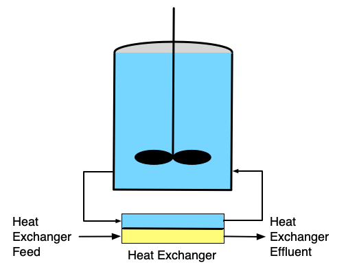
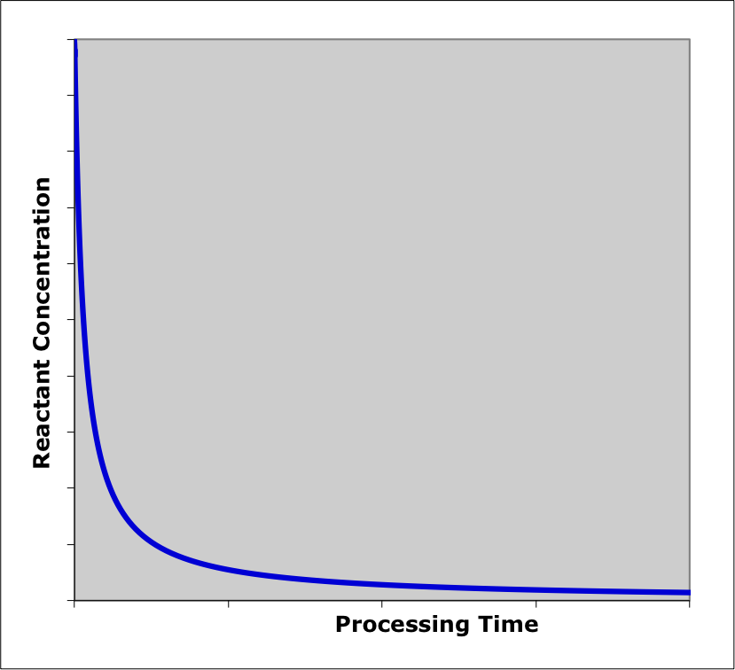

9 BSTR Analysis
This chapter examines reaction engineering of single, isolated, batch stirred-tank reactors (BSTRs). It examines properties, advantages, and disadvantages of BSTRs, common situations where BSTRs are used, the operation of BSTRs, and qualitative and quantitative analysis of BSTRs. It concludes with examples of response and optimization tasks involving BSTRs. Reactor design involving BSTRs is considered separately in Chapter 11.
9.1 BSTR Characteristics
The two most important characteristics of a BSTR are that (a) the reacting fluid within it is perfectly mixed, and (b) there is no flow of reagents into or out of a BSTR while it is operating, that is, during reaction. As the name batch stirred tank reactor suggests, the most common physical form of a BSTR for chemical processing is a stirred tank. As indicated in the schematic representations in Figure 9.1, they are typically cylindrical in shape, completely containing the reacting fluid (indicated by blue shading) within rigid walls. When processing liquids, there may be some space at the top of the reactor that does not contain reacting fluid. This is referred to as headspace; it is indicated by gray shading in figure. There must be some means of thoroughly and rapidly mixing the reacting fluid. Commonly an agitator is immersed in the reacting fluid for this purpose.



If it is necessary to heat or cool the reactor, a heat exchange fluid (indicated by yellow shading in the figure) may flow in and out of the the reactor during operation, but the heat exchange fluid is physically separated from the reacting fluid. Figure 9.1 depicts three common configurations for exchange of heat with an external fluid. One (a in the figure) is referred to as a shell or jacket. It is a compartment that surrounds the reacting fluid and has an external heat exchange fluid flowing through it. Another (b in the figure) consists of a coil of tubing that is submerged in the reacting fluid. The heat exchange fluid flows within the coil. The third (c in the figure) is an external heat exchanger. With the latter configuration it is important that the reacting fluid circulates through the heat exchanger rapidly so that the assumption of perfect mixing of the reacting fluid is satisfied. In all three configurations, it is possible that the exchange fluid temperature is not uniform, but in Reaction Engineering Basics the heat exchange fluid is always assumed to be perfectly mixed.
Stirred tanks are not often used for the processing of gases or when a solid catalyst is being used because stirring gases or small solid particles is difficult. However, configurations different from a stirred tank can be modeled as BSTRs as long as the critical assumptions are met (perfect mixing and no reagent flow in or out of the reactor). Chapter 19 describes a few laboratory BSTRs that are not stirred tanks. Similarly, any reactor in a chemical processing facility that conforms to the assumptions used when deriving the BSTR design equations can be modeled as a BSTR. Heat can be added or removed from a reactor in ways that do not involve an exchange fluid. For example, an electric resistance heating element might be used to add heat. Reaction Engineering Basics only considers heat transfer to or from a perfectly mixed heat exchange fluid.
There are advantages to using a BSTR, as opposed to the other types of ideal reactors, particularly the flow reactors (CSTRs and PFRs). BSTRs offer flexibility both in terms of the reactions being run and in the details of operating the process. In a situation where the demand for products is too small to warrant continuous production, a batch reactor might be used to make one product for a few weeks, and then be used to make a different product for the next few weeks. This kind of flexibility avoids having the reactor sit idle for extended periods of time. Similarly, if the production of a product involves heating to and holding at two or more different temperatures during processing, it may be easier to produce it in a batch reactor than to set up a chain of continuous reactors operating at the necessary temperatures. Similarly, if the addition of one reagent needs to be delayed, it may be possible to do so using a BSTR as described below under BSTR Operation. Again, this may be preferred over two continuous reactors operating in series with that reagent added to the second reactor. In contrast to PFRs, a much broader range of heat transfer area per volume of reacting fluid is possible. Even after the reactor has been constructed, the length of a submerged coil or the area of an external heat exchanger can be altered if additional heat transfer capability is needed.
There are also disadvantages to using BSTRs. As described below, the operation of a BSTR includes periods of time during which no reaction is taking place. Compared to reactors like CSTRs and PFRs that run continuously, this can lead to a lower net rate of production. Additionally, the operation of a BSTR is more labor intensive than operation of a continuous reactor. This adds to the cost of production, meaning a higher product selling price is necessary in order to make a profit. Another issue with batch processes is that of batch-to-batch consistency. As an example, consider the batch production of an expensive perfume. It is critically important that every batch smells the same. Consequently, in addition to being labor intensive, batch processing requires well-trained operators who are careful to precisely follow the specified operational procedure and not deviate from it. Food and beverage production similarly demand high batch-to-batch consistency. This can be even more challenging if, as an example, the process utilizes agricultural reagents that can vary from season to season or year to year.
In light of their advantages and disadvantages, BSTRs are often used to produce value-added products. These are products for which the market demand is smaller, but the price, and therefore the profit per pound, is greater. This is in contrast to commodity products where the demand for large quantities is high, but the price per pound is relatively small. High volume production is usually performed in a continuous reactor (CSTR or PFR).
9.2 BSTR Operation
By its nature, there are times during which reaction is not taking place in a batch reactor. Before reaction can take place, the reactor must first be cleaned (or, in some cases, sterilized) to remove anything “left behind” by the last reaction that was run. Then the reactants must be prepared and charged into the reactor. From this point on, the operation is much like a cooking recipe. A prescribed series of heating and cooling steps is followed, with reaction taking place during every step. A simple example might be that after the reactants are charged, the reactor is heated to a specified temperature, held at that temperature for a specified length of time, and then cooled back to room temperature. In almost all situations, the reaction has ceased by the end of the last step, either because one of the reactants has been fully consumed or because the temperature has been lowered to the point where the rate is effectively zero. The last step in the operating protocol then is to remove the product from the reactor. Often it is transferred to a holding tank from which it can be sent elsewhere for further processing, purification, or longer term storage.
Of course, the operational protocol, i. e. the “recipe,” could be more complicated, requiring any number of steps (also called stages). In some cases an intermediate stage in the operational protocol might call for the addition of a reagent. As long as that reagent is added instantaneously, the reactor can be analyzed as a BSTR. However, if the reagent is added over time as reactions continue to occur, the reactor is no longer a BSTR and that phase of processing must be analyzed as a semi-batch reactor (Chapter 10).
It is very important to recognize that the productivity of the reactor, that is the amount of product it produces per hour, must be calculated taking the so-called turnaround time into account. That is, one must include the time needed to clean, fill and drain the reactor, not just the length of time during which reaction takes place. Doing so permits the definition of the net rate of generation of reagent \(i\) given in Equation 9.1.
\[ r_{i,net} = \frac{n_i - n_{i,0}}{t_{rxn} + t_{turn}} \tag{9.1}\]
Even if the turnaround time was zero, it would still be desirable to define a net rate as above. The net rate is useful for characterizing the overall process. As the reaction is progressing, the rate of reaction is continually changing because the temperature and composition are changing. The rate of reaction at any one time during the processing is referred to as the instantaneous rate at that time. The net rate defined in Equation 9.1 is a kind of average of the instantaneous rate over the processing time. Similarly, it is sometimes useful to differentiate between overall and instantaneous values of other quantities such as yields, conversions, selectivities, etc.
9.3 Qualitative Analysis of Reaction in a BSTR
A simple process for the qualitative analysis of a reacting system was presented in Chapter 8. In a BSTR, there are no spatial variations in temperature or composition because the reactor is perfectly mixed. Therefore, qualitative analysis of a BSTR is used to determine how temperature, reaction rate, composition and related quantities (conversion, selectivity) vary with reaction time.
For purposes of illustration, suppose the typical, irreversible, exothermic reaction, \(A \rightarrow Z\) takes place in an isothermal BSTR. In this situation, only the concentrations need to be considered because in an isothermal reactor the temperature does not change. At the start of the process, the concentration of A will be high and that of Z will be small or zero. During a very small interval of time at the start of the process the concentration of A will decrease and the concentration of Z will increase due to the reaction starting to take place. Hence, in a plot of the concentration of reactant A versus reaction time, the \(y\)-intercept will be high and the slope at that point will be negative. For the product, Z, the \(y\)-intercept will be low or zero and the initial slope will be positive.
The changes in composition will affect the reaction rate. For a typical, irreversible reaction, the decrease in the reactant concentration will tend to decrease the rate while the increase in the product concentration will not affect it. Consequently, at the end of that small interval of reaction time, the rate will be smaller.
In the next small interval of time, the concentration of the reactant, A, will decrease by less than it did in the first interval because the rate is lower. For the same reason, the concentration of the product, Z, will increase by less than it did during the first interval of time. In terms of graphs showing the concentrations versus time, the concentration of the reactant, A, will start high with a negative slope and a curvature that is concave upward. That is, the slope will become less steep as the reaction time increases. In like manner, a graph showing the concentration of Z versus reaction time will start at or near zero with a positive slope and a curvature that is concave downward (i. e. the slope again will get less steep as the reaction time increases).
If that initial behavior continued throughout the process, the concentration of the reactant would decrease with a smaller and smaller slope until finally reaching a horizontal plateau at a value of zero (because the reaction is irreversible and therefor goes to completion). The concentration of the product would increase with a smaller and smaller slope until finally reaching a plateau at a value equal to the initial concentration of A (because in the reaction being considered, the stoichiometry is 1 Z per A). The results of this qualitative analysis are shown in Figure 9.2. Qualitative analysis is not limited to reagent concentrations. Graphs showing conversion, selectivity, rate, temperature, etc. vs. time can also be generated.


The qualitative analysis here was straightforward because the reactor was isothermal. In Example 9.6.1 the qualitative analysis of an adiabatic BSTR is presented. That analysis is more complicated because both concentrations and temperature are changing. In fact, the changes in composition and temperature, taken separately, would affect the rate in opposite ways. As a consequence there is greater uncertainty in the qualitative analysis results.
9.4 BSTR Design Equations
The reactor design equations for BSTRs are derived in Appendix H and discussed in Chapter 6. The BSTR mole and energy balances shown below were presented in Equations 6.8 and 6.9. Chapter 6 also presented the energy balances shown below for a heat exchange fluid that transfers sensible heat, Equation 6.2, and one that transfers latent heat, Equation 6.6. That chapter also describes how to select the specific reactor design equations needed to model BSTRs under different circumstances. That discussion will not be duplicated here.
\[ \frac{dn_i}{dt} = V \sum_j \nu_{i,j}r_j \]
\[ \left(\sum_i n_i \hat C_{p,i} \right) \frac{dT}{dt} - V\frac{dP}{dt} - P \frac{dV}{dt} = \dot Q - \dot W - V \sum_j \left(r_j \Delta H_j \right) \]
\[ \rho_{ex} V_{ex} \tilde C_{p,ex}\frac{dT_{ex}}{dt} = -\dot Q - \dot m_{ex} \int_{T_{ex,in}}^{T_{ex}} \tilde C_{p,ex}dT \]
\[ \frac{\rho_{ex} V_{ex} \Delta H_{\text{latent},ex}^0}{M_{ex}} \frac{d \gamma}{dt} = - \dot Q - \gamma \dot m_{ex} \frac{\Delta H_{\text{latent},ex}^0}{M_{ex}} \]
It is important to notice that the \(V\frac{dP}{dt}\) and \(P\frac{dV}{dt}\) terms in the reacting fluid energy balance will have units of pressure volume time-1. Most of the other terms will have units of energy time-1. This means that a unit conversion is needed. One easy way to do this is to multiply the \(V\frac{dP}{dt}\) and \(P\frac{dV}{dt}\) terms by the ideal gas constant in units of energy mol-1 temperature-1 and divide by the ideal gas constant in units of pressure volume mol-1 temperature-1. The moles and temperatures cancel out giving the necessary conversion factor. This works even for a liquid phase system because the ideal gas law is not being used as the equation of state (i. e. to convert from pressure volume to mol temperature). In Reaction Engineering Basics the rate of doing work, \(\dot{W}\) is almost always negligible. However, if it is non-zero, it will likely have units of power (e. g. hp) or pressure volume time-1, and again a unit conversion is needed.
The design equations can often be simplified. As noted in Chapter 6, if the reactor walls are rigid (or if an ideal, incompressible liquid is being processed) then the volume, \(V\), will be constant and its time derivative, \(\frac{dV}{dt}\), will equal zero. If the work associated with agitation is negligible (it usually is) and there are no other shafts or moving boundaries, then the rate at which the reacting fluid performs work, \(\dot W\), on its surroundings is also equal to zero. When an ideal, incompressible liquid is being processed, the pressure, \(P\), is constant and its time derivative, \(\frac{dP}{dt}\), is equal to zero. (The pressure gradient within the reacting fluid due to the hydrostatic head is neglibible.) Finally, for liquids, Equation 6.10 showed how the sensible heat term in Equation 6.9 can be expressed in terms of the mass-specific or volume-specific heat capacity of the solution as a whole instead of the individual molar heat capacities.
\[ \left(\sum_i n_i \hat C_{p,i} \right) \frac{dT}{dt}\ \Leftrightarrow\ \rho V \tilde C_p \frac{dT}{dt}\ \Leftrightarrow\ V \breve C_p \frac{dT}{dt} \]
When rate expressions are substituted into the BSTR mole and energy balances, they typically introduce concentrations or partial pressures of reagents. When the design equations are solved, those concentrations and partial pressures must be expressed in terms of the molar amounts of the reagents (see Appendix J). The concentration is simply the molar amount divided by the volume, Equation 1.7.
\[ C_i = \frac{n_i}{V} \]
For ideal gases, the partial pressure is related to the molar amount through the ideal gas law, Equation 1.12.
\[ P_i = \frac{n_iRT}{V} \]
When heat transfer involves an exchange fluid as shown in Figure 9.1, the rate of heat exchange in the energy balances can be calculated using Equation 6.18. If the reactor operates adiabatically (i. e. it is perfectly insulated and does not have a shell, coil or external heat exchanger), \(\dot{Q}\) is equal to zero.
\[ \dot Q = UA\left( T_{ex} - T \right) \]
9.5 General Approach to Modeling Isolated BSTRs
Chapter 8 described how to identify a reaction engineering assignment that involves the modeling of an isolated ideal reactor, and Chapter 7 suggested a four step approach to reactor analysis.
- Summarize the information provided in the assignment.
- Formulate the solution mathematically.
- Implement the solution numerically.
- Report and comment upon the results.
This section describes the application of that approach to the modeling of an isolated BSTR. The process may seem a bit abstract when first read, but it should become clearer after seeing it used in the examples provided at the end of this chapter.
Often the operational protocol for a BSTR has multiple heating and cooling stages. When this is true, each stage of the protocol may need to be analyzed separately from the other stages because terms in the reactor design equations may change. The reactor design equations for BSTRs are initial value ordinary differential equations (IVODEs) with elapsed time, \(t\), as the independent variable. The stages occur sequentially, and consequently the values of \(t\) and the dependent variables at the end of one stage in the operating protocol become the initial values for the next stage. The one exception to this is if a reagent is instantaneously added at the end of a stage. In that situation, the initial values for the next stage are the result of mixing the added reagent with the reagents in the BSTR at the end of the previous stage.
Summarizing the information provided in the assignment. An assignment summary is useful in that it extracts the critical information from the assignment narrative and presents it as a concise summary. A procedure for creating an assignment summary is presented in Chapter 7. There are three components in the assignment summary: a list of all known and given constants with the variable symbols being used to represent them, a description of the reactor and its operation, and a list of the quantities of interest indicating the variable symbols being used to represent them. When analyzing a BSTR, the second component will indicate the number of stages in the operational protocol and whether the BSTR is isothermal, adiabatic, heated, or cooled in those stages.
Formulating the solution mathematically. For an assignment involving the analysis of a BSTR, it will always be necessary to write the reactor design equations that are needed to model that specific BSTR. Selecting which equations are needed to model a given BSTR and simplifying those design equations was described in Chapter 6 and in the preceding section of this chapter.
As noted above, the design equations for an isolated BSTR will be a set of IVODEs with \(t\) as the independent variable. The dependent variables will always include the molar amounts of the reagents present in the system, \(n_i\). Depending which other design equation are needed to model the BSTR, the dependent variables may also include the temperature of the reacting fluid, \(T\), its pressure, \(P\), and either the outlet temperature of the exchange fluid, \(T_{ex}\), or the fraction of the exchange fluid that undergoes phase change, \(\gamma\).
If the reacting fluid is an ideal gas and the reactor design equations include an energy balance on the reacting fluid, the temperature and the pressure will appear as a dependent variables. Consequently, the number of dependent variables will be one greater than the number of IVODEs. In this situation either a dependent variable must be eliminated from the design equations or another IVODE must be added to them (Appendix J). A differential form of the ideal gas law, Equation 6.11, is used to accomplish that. For a BSTR, \(V\) is constant so its time derivative is zero, and does not appear in the differential form of the gas law. The differential ideal gas law can either be added to the reactor design equations, making the number of equations equal to the number of dependent variables, or it can be solved for \(\frac{dP}{dt}\), substituting the result into the energy balance and thereby eliminating \(P\) as a dependent variable. Both of these approaches are illustrated in Example 9.6.3.
\[ RT\left( \sum_i \frac{dn_i}{dt} \right) + R\left( \sum_i n_i \right)\frac{dT}{dt} - V \frac{dP}{dt} = 0 \]
The reactor design equations will be solved numerically, so if they are not in the form of derivative expressions (see Appendix J), they should be converted to that form. Once that has been accomplished, a table identifying the initial values and stopping criterion can be created. For the first stage of the operational protocol, the initial value of \(t\) should be 0.0. The other initial values and the known final value should be indicated using the same variable symbol as that used in the assignment summary. If an initial or final value is not known, an appropriate variable symbol should be chosen to represent it. Quite commonly, a subscripted zero is added to indicate an initial value and a subscripted “f” is used to denote a final value.
The next sections of the mathematical formulation consist of ancillary equations of three types. When the BSTR design equations are solved numerically, it will be necssary to evaluate the derivatives, using known constants and the independent and dependent variables. Before that can be done, unknown constants and variables other than \(t\) and the dependent variables must be calculated. Equations that can be used to calculate the unknown constants and extra variables are the first kind of ancillary equations.
When an IVODE solver is called to solve the BSTR design equations, the initial values and the stopping criterion must be passed to it. The second set of ancillary equations are those that are needed to calculate any initial or final values that are unknown. The third set of ancillary equations are those that are needed to calculate quantities of interest other than those found by solving the BSTR design equations. (Solving the reactor design equations only yields values of the molar amounts, the temperature, the pressure, and either the exchange fluid temperature of the fraction of the exchange fluid that condenses.)
The mathematical formulation concludes with a succinct description of how to use the equations to evaluate the derivatives, calculate the initial values, and calculate other quantities of interest. In some analyses an ATE solver must be used to calculate an unknown constant (again, see Appendix J). In this case, the calculations summary additionally includes a description of how to calculate the residual associated with the ATE. All of these calculations are used in the numerical implementation of the solution.
Implementing the solution numerically. The numerical implementation of the solution involves writing computer code. Herein the implementation is described in terms of a set of separate functions (see Chapter 7). One function defines constants and makes them available to all other functions. In some cases a variable may also be made available to the other functions. A derivatives function is used to evaluate the derivatives and a residual function is used to evaluate the residual, if an ATE is also being solved. A reactor model function is responsible for calling an IVODE solver and thereby solving the reactor design equations. Top-level code or a master function is responsible for calculating the unknown constant, if there is one, calling the reactor model function to solve the BSTR design equations, calculating any other quantities of interest, and generating any requested tables or graphs. In this chapter the numerical implementation is described generally without reference to specific software packages. Familiarity with the numerical solution of IVODEs at the level of Appendix J and ATEs at the level of Appendix I is assumed.
Reporting and discussing the results is straightforward and does not require exposition here.
9.6 Examples
The examples in this section illustrate the analysis of isolated BSTRs. Examples 9.6.1 and 9.6.2 are response assignments where the assignment specifies a sufficient number of quantities so that the reactor design equations can be solved to find the quantities of interest. In Example 9.6.1 all necessary reactor inputs and process parameters are specified and the quantities of interest are related to reactor outputs. In Example 9.6.2 two reactor outputs are specified (the reaction time and the conversion), and one of the unknown quantities of interest is a reactor input (the initial temperature). In addition to illustrating the computational procedure for these two types of response tasks, Example 9.6.1 involves a single reaction taking place in an adiabatic BSTR while Example 9.6.2 features two reactions taking place in a BSTR that is cooled using an exchange fluid. Examples 9.6.3 and 9.6.4 are optimization assignments that identify a reactor variable that must be maximized or minimized by specifying a reactor input. The BSTR operational protocol in Example 9.6.3, like those in Examples 9.6.1 and 9.6.2, consists of a single stage, but unlike the other examples, the reacting fluid is a gas and not a liquid. Example 9.6.4 illustrates a situation where there are multiple stages in the operating protocol. It also considers turnaround time and the net rate of reaction.
9.6.1 Concentration, Temperature and Rate Profiles during Adiabatic Operation of a BSTR
The liquid-phase reaction between A and B, equation (1), is irreversible. At the conditions of interest in this assignment, the heat of reaction is constant and equal to -101.2 kJ mol-1. The rate expression is given in equation (2), where the rate coefficient exhibits Arrhenius temperature dependence with a pre-exponential factor of 5.11 x 104 L mol-1 s-1 and an activation energy of 74.8 kJ mol-1.
Two solutions, one containing only reagent A at 180 °C and one containing only reagent B at 180 °C, are charged to an adiabatic BSTR producing 1900 L of solution initially containing 2.9 mol A L-1 and 3.2 mol B L-1 at 180 °C. The solution is ideal and has a constant heat capacity of 1.23 cal g-1 K-1 and a constant density of 1.02 g cm-3. Plot the concentrations of A, B, Y, and Z, the reacting fluid temperature, and the instantaneous reaction rate for the first 2 h of reaction, and comment upon the shapes of the graphs.
\[ A + B \rightarrow Y + Z \tag{1} \]
\[ r_1 = k_1C_AC_B \tag{2} \]
This assignment describes a single BSTR and no other equipment. The rate expression for the reaction taking place in the reactor is provided, and the quantities of interest are reactor variables. I know from Chapter 8 that this combination of characteristics identifies this as an isolated ideal reactor modeling assignment.
I’ll start by summarizing the given constants, the reactor type and operation, and the quantities of interest. I will use appropriate variable symbols for each quantity, e. g. \(n\) for molar amounts, \(T\) for temperatures, etc. For quantities that are initial values, I will add a subscripted “0” and for final values I will add a subscripted “f”. I’ll also add the ideal gas constant to the given constants. Numerical solution of the design equations will yield sets of corresponding values of the independent and dependent variables that span the range from their initial values to their final values. I’ll use \(n_A\left(t\right)\), etc. to represent those quantities of interest.
9.6.1.1 Assignment Summary
Given and Known Constants: \(\Delta H_1\) = -101.2 kJ mol-1, \(k_{0,1}\) = 5.11 x 104 L mol-1 s-1, \(E_1\) = 74.8 kJ mol-1, \(V\) = 1900 L, \(T_0\) = (180 + 273.15) K, \(C_{A,0}\) = 2.9 mol L-1, \(C_{B,0}\) = 3.2 mol L-1, \(\tilde{C}_p\) = 1.23 cal g-1 K-1, \(\rho\) = 1.02 g cm-3, \(t_f\) = 2 h, and \(R\) = 8.314 J mol-1 K-1.
Reactor System: Adiabatic BSTR with a 1-stage operational protocol.
Quantities of Interest: \(C_A\left(t\right)\), \(C_B\left(t\right)\), \(C_Y\left(t\right)\), \(C_Z\left(t\right)\), \(T\left(t\right)\), and \(r\left(t\right)\) as graphs.
9.6.1.2 Mathematical Formulation of the Solution
Reactor analysis always requires a set of reactor design equations. The selection of the specific design equations for a given analysis was described in Chapter 6. Mole balances are always needed. I’ll write a BSTR mole balance, Equation 6.8, on each of the reagents. In this assignment, only one reaction is taking place, so the summation reduces to a single term.
\[ \frac{dn_i}{dt} = V \sum_j \nu_{i,j}r_j \qquad \Rightarrow \qquad \frac{dn_i}{dt} = V \nu_i r \]
This BSTR is not isothermal, so the mole balances cannot be solved independently of an energy balance on the reacting fluid, Equation 6.9. In this assignment the reacting fluid is a liquid which I will assume to be an incompressible ideal solution. Consequently, the reacting fluid volume and the total pressure are constant, and their time derivatives are equal to zero. The reactor is adiabatic, so the rate of heat input, \(\dot{Q}\), is equal to zero. There are no shafts or moving boundaries other than the agitator, and the rate at which it performs work is negligible, so \(\dot{W}\) is also equal to zero. With only one reaction taking place, the summation over the reactions reduces to a single term. This assignment provides the mass-specific heat capacity of the entire solution, so the sensible heat term can be re-written using that heat capacity, Equation 6.10. Finally, the energy balance can be put in the form of a derivative expression by dividing both sides by \(\rho V \tilde{C}_p\).
\[ \cancelto{\rho V \tilde{C}_p}{\left(\sum_i n_i \hat C_{p,i} \right)} \frac{dT}{dt} - \cancelto{0}{V\frac{dP}{dt}} - \cancelto{0}{P\frac{dV}{dt}} = \cancelto{0}{\dot Q} - \cancelto{0}{\dot W} - V \cancelto{r \Delta H}{\sum_j \left(r_j \Delta H_j \right)} \]
\[ \rho V \tilde{C}_p \frac{dT}{dt} = - V r_1 \Delta H_1 \]
\[ \frac{dT}{dt} = -\frac{V r_1 \Delta H_1}{\rho V \tilde{C}_p} \]
In this assignment the BSTR operates adiabatically, so there isn’t an exchange fluid, and an exchange fluid energy balance cannot be written. Momentum balances are not used with stirred tank reactors. This gives five reactor design equations that contain five dependent variables, so it is not necessary to add an IVODE or eliminate a dependent variable. So for this reactor, the design equation consist of mole balances on A, B, Y, and Z and an energy balance on the reacting fluid.
Reactor Design Equations
Mole balance design equations for A, B, Y, and Z are presented in equations (3) through (6), and the energy balance on the reacting fluid is given by equation (7).
\[ \frac{dn_A}{dt} = -r_1V \tag{3} \]
\[ \frac{dn_B}{dt} = -r_1V \tag{4} \]
\[ \frac{dn_Y}{dt} = r_1V \tag{5} \]
\[ \frac{dn_Z}{dt} = r_1V \tag{6} \]
\[ \frac{dT}{dt} = -\frac{r_1 \Delta H_1}{\rho \tilde{C}_p} \tag{7} \]
Initial values and a stopping criterion are needed when solving IVODEs. The instant at which the two solutions are charged into the reactor can be defined as \(t=0\). The initial values are then the molar amounts of the reagents and the temperature at that instant. The two solutions that were charged to the BSTR did not contain reagent Y or reagent Z, so their initial amounts are zero. The final value of the time in this assignment is 2 h, which I represented as \(t_f\) in the list of known constants. Consequently the stopping criterion is that \(t=t_f\).
Intial Values and Stopping Criterion
| Variable | Initial Value | Stopping Criterion |
|---|---|---|
| \(t\) | \(0\) | \(t_f\) |
| \(n_A\) | \(n_{A,0}\) | |
| \(n_B\) | \(n_{B,0}\) | |
| \(n_Y\) | \(0\) | |
| \(n_Z\) | \(0\) | |
| \(T\) | \(T_0\) |
In order to solve the IVODEs numerically I’ll need to do two things: calculate the values of the derivatives at the start of each integration step and calculate all of the initial and final values in Table 9.1.
I’ll start by writing the equations that I’ll need in order to evaluate the derivatives appearing in the reactor design equations. The design equations are in the form of derivative expressions, so no further manipulation is needed.
I’ll need to evaluate the derivatives at the start of each integration step. At that point, the independent and dependent variables will be known along with the given and known constants. I will need to calculate any other quantities that appear in the derivatives expressions.
Here, the only other variable is \(r_1\). The assignment provides the rate expression, equation (2), which can be used to calculate \(r_1\). However, the rate expression contains the rate coefficient, \(k_1\), and the concentrations of A and B. They, too, will need to be calculated before \(r_1\) can be calculated. The rate coefficient can be calculated using the Arrhenius expression, Equation 4.8. The defining equation for concentration in a closed system, Equation 1.7, can be used to calculate the concentrations of A and B.
Ancillary Equations for Evaluating the Derivatives
The rate, \(r_1\), appearing in the reactor design equations can be calculated using the given rate expression, equation (2). The rate coefficient, \(k_1\), appearing in equation (2) can be calculated using the Arrhenius expression, equation (8). The concentrations can be calculated using equations (9) and (10).
\[ k = k_{0,1}\exp{\left( \frac{-E_1}{RT} \right)} \tag{8} \]
\[ C_A = \frac{n_A}{V} \tag{9} \]
\[ C_B = \frac{n_B}{V} \tag{10} \]
When I solve the IVODEs numerically, I’ll also need to know the initial and final values in Table 9.1. Checking the the given and known constants in the assignment summary shows that the initial values, \(n_{A,0}\) and \(n_{B,0}\) are not known. The assignment does provide the initial concentrations of A and B and the fluid volume, so I can calculate the initial molar amounts using the defining equation for concentration.
Ancillary Equations for Calculating the Initial and Final Values
The initial molar amounts of A and B in Table 9.1 can be calculated using equations (11) and (12).
\[ n_{A,0} = C_{A,0}V \tag{11} \]
\[ n_{B,0} = C_{B,0}V \tag{12} \]
At this point the IVODEs can be solved for \(n_A\left(t\right)\), \(n_B\left(t\right)\), \(n_Y\left(t\right)\), \(n_Z\left(t\right)\), and \(T\left(t\right)\) in the range from \(t=0\) to \(t=t_f\). Only one of those results, \(T\left(t\right)\) is a quantity of interest. All the other quantities of interest still need to be calculated. Yet again, the defining equation for concentration can be used to calculate the concentrations. The instantaneous rate can then be calculated using the rate expression.
Ancillary Equations for Calculating Other Quantities of Interest
With the information given above, equations (3) through (7) can be solved for corresponding sets of values of \(t\), \(n_A\), \(n_B\), \(n_Y\), \(n_Z\), and \(T\) that span the range from their initial values to their final values. The concentrations of A, B, Y, and Z, at each time can then be calculated using equations (9), (10), (13), and (14). Then, knowing \(C_A\), \(C_B\), and \(T\), at each time, the instantaeous rate in that range can be calculated using the Arrhenius expression, equation (8), and the rate expression, equation (2).
\[ C_Y = \frac{n_Y}{V} \tag{13} \]
\[ C_Z = \frac{n_B}{V} \tag{14} \]
Calculations Summary
- Substitute given and known constants into all equations.
- When it is necessary to evaluate the derivatives
- \(t\), \(n_A\), \(n_B\), \(n_Y\), \(n_Z\), and \(T\) will be available.
- Calculate \(k_1\), \(C_A\) and \(C_B\) using equations (8), (9), and (10),
- Calculate \(r_1\) using equation (2), and
- Calculate the values of the derivatives using equations (3) through (7).
- When it is necessary to calculate the initial and final values in Table 9.1
- \(T_0\) and \(t_f\) are known constants.
- Calculate the initial values, \(n_{A,0}\) and \(n_{B,0}\), use equations (11) and (12).
- When it is necessary to calculate the quantities of interest, \(C_A\left(t\right)\), \(C_B\left(t\right)\), \(C_Y\left(t\right)\), \(C_Z\left(t\right)\), \(T\left(t\right)\), and \(r\left(t\right)\)
- Corresponding sets of values of \(t\), \(n_A\), \(n_B\), \(n_Y\), \(n_Z\), and \(T\), spanning the range from their initial values to their final values will be available.
- Calculate corresponding values of \(k_1\), \(C_A\), \(C_B\), \(C_Y\), and \(C_Z\) using equations (8), (9), (10), (13), and (14).
- Calculate corresponding values of \(r_1\) using equation (2).
9.6.1.3 Numerical Implementation of the Solution
- Make the given and known constants available for use in all functions.
- Write a derivatives function that
- receives the independent and dependent variables, \(t\), \(n_A\), \(n_B\), \(n_Y\), \(n_Z\), and \(T\), as arguments,
- evaluates the derivatives as described in step 2 of the calculations summary, and
- returns the resulting values of the derivatives.
- Write a reactor model function that
- calculates the initial and final values in Table 9.1 as described in step 3 of the calculations summary,
- gets corresponding sets of values of \(t\), \(n_A\), \(n_B\), \(n_Y\), \(n_Z\), and \(T\), spanning the range from their initial values to their final values by calling an IVODE solver and passing the following information to it
- the initial values and stopping criterion in Table 9.1 and
- the name of the derivatives function from step 2 above, c, checks that the solver successfully solved the IVODEs, and
- returns the values returned by the IVODE solver.
- Perform the analysis by
- calling the reactor model function from step 3 to get sets of values of \(t\), \(n_A\), \(n_B\), \(n_Y\), \(n_Z\), and \(T\),
- calculating the other quantities of interest, \(C_A\), \(C_B\), \(C_Y\), \(C_Z\), and \(r_1\), as described in step 4 of the calculation summary, and
- generating the requested graphs.
9.6.1.4 Results and Discussion
The calculations were performed as described above. The variation of concentrations of reagents, A, B, Y, and Z, during the first two hours of operation of the BSTR are shown in Figure 9.3. The variation of the reacting fluid temperature during that period is shown in Figure 9.4, and the variation of the instantaneous rate is shown in Figure 9.5.


The concentrations of the reactants, A and B, decrease monotonically during the first two hours of operation while the concentrations of the products, Y and Z, increase. The temperature increases steadily, too. The variation of the reaction rate is different. Initially it increases, but then it passes through a maximum after which it steadily decreases.
Qualitative Analysis
A qualitative analysis shows that the variations in the concentrations, temperature and rate seen in Figures 9.3, 9.4, and 9.5 are expected. At \(t=0\), the concentrations of the reagents and the temperature are all at their initial values.
At that point the rate is positive, so after a short interval of time the concentrations of A and B will have decreased slightly and the concentrations of Y and Z will have increased slightly due to the occurrence of the reaction. Because the reaction is exothermic and the reactor operates adiabatically, the temperature will have increased due to the heat released by the reaction.
The rate could either increase or decrease during this short interval. The concentrations of the reactants, A and B, are decreasing, and this alone would cause the rate to decrease. However, at the same time the temperature is increasing, and that alone would cause the rate to increase. Generally, at the start of the reaction the exponential dependence of the rate upon the temperature will be stronger than its dependence upon the reactant concentrations, and the rate will increase. This is seen to be the case in Figure 9.5. (Had the heat of reaction been very small, leading to a small increase in the temperature, it is possible that the rate would have decreased, especially if the activation was also small).
To summarize, during that initial short interval of time, the concentrations of Y and Z, the temperature, and the rate all have positive slopes while the concentrations of A and B have negative slopes. During the next short interval of time, the rate is larger than during the first interval of time. As a consequence, the concentrations and temperature will change more during the second interval. That means that the curvature of the temperature, Y concentration, and Z concentration profiles is initially concave upward and the curvature of the A and B concentration profiles is initially concave downward. Again during this second short interval, opposing effects on the rate are associated with the decreasing reactant concentrations and the increasing temperature.
It is hard to see in Figure 9.3 and Figure 9.4, but because initially the rate is increasing, the concentrations of A and B are decreasing faster and faster and the concentrations of Y and Z and the temperature are increasing faster and faster. These trends cannot continue indefinitely, if they did, \(C_Y\), \(C_Z\), and \(T\) would approach positive infinity and \(C_A\) and \(C_B\) would approach negative infinity.
In fact, the curvature does change because at some point the effect of decreasing reactant concentrations upon the rate becomes stronger than the effect of increasing temperature. At the point where the two effects become equal, the rate reaches a maximum. Beyond the maximum, the effect of decreasing reactant concentration dominates and the rate decreases. This is seen in Figure 9.5 where the instantaneous rate passes through a maximum.
At the point where the rate reaches its maximum value, the concentration and temperature profiles exhibit an inflection point. (Again, in this example this is very, very subtle and cannot be discerned in the figures.) Beyond that point, the \(C_Y\), \(C_Z\), and \(T\) profiles are concave downward and the \(C_A\) and \(C_B\) are concave upward. That is, the changes over time become smaller and smaller. This behavior can continue indefinitely. Eventually the concentrations and temperature will stop changing and become constant. In this example, A is the limiting reactant, and the reaction is irreversible, so the concentrations and temperature will become constant when \(C_A\) becomes equal to zero.
Videos showing how to complete this assignment using either Matlab or Python, along with the Matlab and Python code, are available in SCoRE.
9.6.2 Parallel Reaction Selectivity in a Cooled BSTR with an Unknown Initial Temperature
A jacketed, 10 L BSTR is going to be used to process an aqueous solution of A and B. The reactor jacket is perfectly mixed with a volume of 1400 cm3, a heat transfer coefficient of 138 cal ft−2 min−1 K−1 and a heat transfer area of 1200 cm2. Cooling water at 40 °C flows into the jacket at a rate of 100 g min-1. Both the reacting fluid and the cooling water may be taken to have a density of 1 g cm−3 and a heat capacity of 1 cal g−1 K−1.
Solutions containing A, B, X, Y, and Z are ideal and there is no heat of mixing. The reactor will be charged by mixing two separate solutions, one containing only reagent A and the other containing only reagent B, giving a 10 L charge with initial concentrations of 5 mol A L-1 and 7 mol B L-1. At the time the reactor is charged, the cooling water temperature is 40 °C. Reactions (1) and (2) will occur in the reactor. The heat of reaction (1) is −16.7 kcal mol−1, and that for reaction (2) is −14.3 kcal mol−1. The rate expression for reaction (1) is given in equation (3) where the pre-exponential factor is 9.74 x 109 L mol−1 min−1 and the activation energy is 20.1 kcal mol−1. The rate expression for reaction (2) is given in equation (4) where the pre-exponential factor is 2.38 x 1013 min−1 and the activation energy is 25.3 kcal mol−1.
What initial temperature is needed in order to convert 45% of the A in 30 min, and with that initial temperature what will the final temperature, the outlet exchange fluid temperature, and the selectivity of X to Z equal?
\[ A + B \rightarrow X + Y \tag{1} \]
\[ A \rightarrow Z \tag{2} \]
\[ r_1 = k_1C_AC_B \tag{3} \]
\[ r_2 = k_2C_A \tag{4} \]
This is an isolated reactor modeling assignment: the system consists of only a reactor, it’s operation is described, the rate expressions are known and it asks about reactor inputs and outputs. I’ll begin by summarizing the assignment. I’ll use appropriate variable symbols to represent the given constants. For initial values I’ll add a subscripted “0” and for final values a subscripted “f”. I’ll denote the temperature of the cooling water in the jacked as \(T_{ex}\). Thus, \(T_{ex,0}\) is the initial temperature of the cooling water in the jacket. Unlike the reactants, cooling water flows into the jacket continuously, so I’ll use \(T_{ex,in}\) to represent the temperature of the cooling water entering the jacket. I will add the ideal gas constant to the given constants.
9.6.2.1 Assignment Summary
Given and Known Constants: \(V\) = 10 L, \(V_{ex}\) = 1.4 L, \(U\) = 138 cal ft-2 min-1 K-1, \(A\) = 1200 cm2, \(T_{ex,in}\) = 40 °C, \(\dot{m}_{ex}\) = 100 g min-1, \(\rho\) = 1.0 g cm-3, \(\rho_{ex}\) = 1.0 g cm-3, \(\tilde{C}_p\) = 1.0 cal g-1 K-1, \(\tilde{C}_{p,ex}\) = 1.0 cal g-1 K-1, \(C_{A,0}\) = 5.0 M, \(C_{B,0}\) = 7.0 M, \(T_{ex,0}\) = 40 °C, \(\Delta H_1\) = -16.7 kcal mol-1, \(\Delta H_2\) = -14.3 kcal mol-1, \(k_{0,1}\) = 9.74 x 109 L mol-1 min-1, \(E_1\) = 20.1 kcal mol-1, \(k_{0,2}\) = 2.38 x 1013 min-1, \(E_2\) = 25.3 kcal mol-1, \(f_{A,f}\) = 0.45, \(t_f\) = 30 min, and \(R\) = 1.987 cal mol-1 K-1.
Reactor System: Cooled BSTR with a 1-stage operating protocol.
Quantities of Interest: \(T_0 : f_A \big \vert_{t=tf} = f_{A,f}\), \(T_f\), \(T_{ex,f}\), and \(S_{X/Z,f}\)
9.6.2.2 Mathematical Formulation of the Solution
The first thing I need to do is generate the reactor design equations for this reactor. Mole balances are always needed, and for a BSTR the mole balance is Equation 6.8. In this system, there are two reactions taking place, so the summation expands to two terms.
\[ \frac{dn_i}{dt} = V \sum_j \nu_{i,j}r_j = \nu_{i,1}r_1V + \nu_{i,2}r_2V \]
The BSTR is not isothermal, so an energy balance on the reacting fluid, Equation 6.9, is required. There are no shafts or moving boundaries (other than the agitator which is assumed to do negligible work), so the rate of doing work, \(\dot{W}\), is zero. The reacting fluid is a liquid, so the pressure is constant and its time-derivative is zero. Assuming it to be an incompressible ideal mixture means that the volume also is constant, and the time-derivative of the volume is equal to zero. The assignment provides a mass-specific heat capacity, so the sensible heat term can be written in terms of that instead of molar heat capacities. Since there are two reactions, the final summation expands to two terms. After making all those substitutions, both sides of the the reacting fluid energy balance can be divided by \(\rho V \tilde{C}_p\) to put it in the form of a derivative expression.
\[ \cancelto{\rho V \tilde{C}_p}{\left(\sum_i n_i \hat C_{p,i} \right)} \frac{dT}{dt} - \cancelto{0}{V\frac{dP}{dt}} - \cancelto{0}{P \frac{dV}{dt}} = \dot Q - \cancelto{0}{\dot W} - V \cancelto{\left(r_1 \Delta H_1 + r_2 \Delta H_2\right)}{\sum_j \left(r_j \Delta H_j \right)} \]
\[ \rho V \tilde{C}_p \frac{dT}{dt} = \dot Q - V \left(r_1 \Delta H_1 + r_2 \Delta H_2\right) \]
The reactor is cooled with chilled water which gains sensible heat from the reacting fluid, so an energy balance on that exchange fluid is necessary and is given by Equation 6.2.
\[ \rho_{ex} V_{ex} \tilde C_{p,ex}\frac{dT_{ex}}{dt} = -\dot Q - \dot m_{ex} \int_{T_{ex,in}}^{T_{ex}} \tilde C_{p,ex}dT \]
The exchange fluid heat capacity is constant, making the evaluation of the integral trivial. Dividing both sides of the exchange fluid energy balance by \(\rho_{ex} V_{ex} \tilde C_{p,ex}\) then puts it in the form of a derivative expression.
\[ \dot m_{ex}\int_{T_{ex,in}}^{T_{ex}} \tilde C_{p,ex}dT \Rightarrow \dot m_{ex}\tilde C_{p,ex}\left( T_{ex} - T_{ex,in} \right) \]
Momentum balances are not used with BSTRS so the full set of design equations consists of mole balances on each of the reagents, A, B, X, Y, and Z, an energy balance on the reacting fluid, and an energy balance on the exchange fluid. They consist of seven IVODEs containing seven dependent variables, so it isn’t necessary to add an IVODE or eliminate a dependent variable.
Reactor Design Equations
Mole balance design equations for A, B, X, Y, and Z are presented in equations (5) through (9). An energy balance on the reacting fluid is given by equation (10), and an energy balance on the exchange fluid is given by equation (11).
\[ \frac{dn_A}{dt} = \left(-r_1 -r_2 \right)V \tag{5} \]
\[ \frac{dn_B}{dt} = -r_1 V \tag{6} \]
\[ \frac{dn_X}{dt} = r_1 V \tag{7} \]
\[ \frac{dn_Y}{dt} = r_1 V \tag{8} \]
\[ \frac{dn_Z}{dt} = r_2 V \tag{9} \]
\[ \frac{dT}{dt} = \frac{\dot Q - V \left(r_1 \Delta H_1 + r_2 \Delta H_2\right)}{\tilde{C}_p \rho V} \tag{10} \]
\[ \frac{dT_{ex}}{dt} = \frac{-\dot Q - \dot m_{ex} \tilde C_{p,ex}\left(T_{ex} - T_{ex,in}\right)}{\rho_{ex} V_{ex} \tilde C_{p,ex}} \tag{11} \]
Initial values and a stopping ctierion are needed when solving IVODEs numerically. The instant the fluids are mixed in the reactor can be defined as \(t=0\). The molar amounts of A, B, X, Y, and Z, the reacting fluid temperature, and the exhhange fluid temperature at that moment are then the initial values. The solutions charged to the reactor did not contain X, Y, or Z, so their initial values are zero. The assignment provides two final values, \(f_{A,f}\) and \(t_f\). I will use \(t_f\) to define the stopping criterion.
Intial Values and Stopping Criterion
| Variable | Initial Value | Stopping Criterion |
|---|---|---|
| \(t\) | \(0\) | \(t_f\) |
| \(n_A\) | \(n_{A,0}\) | |
| \(n_B\) | \(n_{B,0}\) | |
| \(n_X\) | \(0\) | |
| \(n_Y\) | \(0\) | |
| \(n_Z\) | \(0\) | |
| \(T\) | \(T_0\) | |
| \(T_{ex}\) | \(T_{ex,0}\) |
In order to solve the IVODEs numerically I’ll need to do two things: calculate the values of the derivatives at the start of each integration step and calculate all of the initial and final values in Table 9.2.
I’ll start by writing the equations that I’ll need in order to evaluate the derivatives appearing in the reactor design equations. The design equations are in the form of derivatives expressions, so it is not necessary to modify them.
I’ll need to evaluate the derivatives at the start of each integration step. At that point, the independent and dependent variables will be known along with the given and known constants. I will need to calculate any other quantities that appear in the derivatives expressions.
The only other variables that appear in the design equations are \(r_1\), \(r_2\), and \(\dot{Q}\). The two rates, \(r_1\) and \(r_2\) can be calculated using the rate expressions, equation (3) and (4). The rate expressions contains four additional variables that will need to be calculated, \(k_1\), \(k_2\), \(C_A\) and \(C_B\). The rate coefficients can be calculated using the Arrhenius expression, Equation 4.8. The concentrations can be calculated using the defining equation for concentration in a closed system, Equation 1.7.
The rate of heat exchange, \(\dot{Q}\), can be calculated using the given heat transfer coefficient, \(U\), and heat transfer area, \(A\), using Equation E.4.
Ancillary Equations for Evaluating the Derivatives
\[ k_1 = k_{0,1}\exp{\left( \frac{-E_1}{RT} \right) } \tag{12} \]
\[ k_2 = k_{0,2}\exp{\left( \frac{-E_2}{RT} \right) } \tag{13} \]
\[ C_A = \frac{n_A}{V} \tag{14} \]
\[ C_B = \frac{n_B}{V} \tag{15} \]
\[ \dot{Q} = UA\left(T_{ex} - T \right) \tag{16} \]
When I solve the IVODEs numerically, I’ll also need to know the initial and final values in Table 9.2. The initial molar amounts of A and B can be calculated using their given initial concentrations and the reacting fluid volume. The final value, \(t_f\), is a given constant. However, the initial value of the temperature is not known and it can’t be calculated directly from the other given constants.
The other given final value, \(f_{A,f}\), can be used to write an implicit equation for \(T_0 : f_A \big \vert_{t=tf} = f_{A,f}\) (see Appendix J). The conversion in a closed system is defined by Equation 3.4. Rearranging that equation gives an expression for the final molar amount of A.
\[ n_{A,f} = n_{A,0} \left( 1 - f_{A,f} \right) \]
The final molar amount of A found by solving the design equations, \(n_A \big \vert_{t=t_f}\), will only equal \(n_{A,f}\) when the design equations are solved using the desired initial temperature, \(T_0\). This can be expressed as an implicit equation for \(T_0\), and written in the form of a residual expression (see Appendix J).
Ancillary Equations for Calculating the Initial and Final Values
Equations (17) - (19) can be used to calculate the initial molar amounts. Equation (20) is an implicit equations that can be solved to find the initial value of the temperature. In that equation, \(n_A \big \vert_{t=t_f}\) is the final molar amount of A predicted by the design equations and \(n_{A,f}\) is the specified final molar amount of A calculated using equation (19).
\[ n_{A,0} = C_{A,0}V \tag{17} \]
\[ n_{B,0} = C_{B,0}V \tag{18} \]
\[ n_{A,f} = n_{A,0} \left( 1 - f_{A,f} \right) \tag{19} \]
\[ 0 = n_A \big \vert_{t=t_f} - {n_{A,f}} = \epsilon \tag{20} \]
At this point, equation (20) and the reactor design equations can be solved. Doing so will yield \(T_0\), and corresponding sets of values of \(t\), \(n_A\), \(n_B\), \(n_X\), \(n_Y\), \(n_Z\), \(T\), and \(T_{ex}\) that span the range from their initial values their final values. \(T_0\) is one of the quantities of interest. The others can be found or calculated using the results from solving the IVODEs and the defining equation for selectivity, Equation 3.17.
Ancillary Equations for Calculating Other Quantities of Interest
The results from solving the reactor design equations can be used to calculate the final temperature, exchange fluid temperature and selectivity as shown in equations (21), (22), and (23).
\[ T_f = T\big\vert_{t=t_f} \tag{21} \]
\[ T_{ex,f} = T_{ex}\big\vert_{t=t_f} \tag{22} \]
\[ S_{X/Z,f} = \frac{n_X \Big\vert_{t=t_{rxn}}}{n_Z \Big\vert_{t=t_{rxn}}} \tag{23} \]
I have written all of the equations needed to complete the assignment. I will conclude the formulation by summarizing how to use those equations in the numerical implementation of the solution.
As I implement the solution numerically, I’ll make all of the given and known constants available throughout the calculations. As described in Appendix J, I’ll similarly need to make the current value of \(T_0\) available. As I perform the numerical solutions I’ll need to evaluate the derivatives, calculate the initial and final values, and calculate quantities of interest that aren’t found directly by solving the reactor design equations. One thing to note is that I won’t calculate \(T_0\) directly when I’m calculating the other initial and final values. It will be found separately using an ATE solver, so instead of needing to calculate it, I will need to evaluate the residual for equation (20).
Calculations Summary
- Substitute given and known constants into all equations.
- When it is necessary to evaluate the derivatives
- \(T_0\), \(t\), \(n_A\), \(n_B\), \(n_X\), \(n_Y\), \(n_Z\), \(T\), and \(T_{ex}\) will be available.
- Calculate \(\dot{Q}\) using equation (16).
- Calculate \(k_1\), \(k_2\), \(C_A\), and \(C_B\) using equations (12) - (15).
- Calculate \(r_1\) and \(r_2\) using equations (3) and (4).
- Evaluate the derivatives using equations (5) - (11).
- When it is necessary to calculate the initial and final values other than \(T_0\) in Table 9.2
- \(t_f\) and \(T_{ex,0}\) are known constants.
- Calculate \(n_{A,0}\), \(n_{B,0}\), and \(n_{A,f}\) using equations (17) through (19).
- When it is necessary to evaluate the residual, \(\epsilon\)
- A guess for \(T_0\) will be available for use in all equations.
- Solve equations (5) through (11) using that guess and the initial values and stopping criterion in Table 9.2 and extract \(n_A \big \vert_{t=t_f}\) from the results.
- Calculate \(\epsilon\) using equation (20).
- When it is necessary to calculate the quantities of interest, [list]
- Corresponding sets of values of \(t\), \(n_A\), \(n_B\), \(n_X\), \(n_Y\), \(n_Z\), \(T\), and \(T_{ex}\), spanning the range from their initial values to their final values will be available.
- Calculate \(T_f\), \(T_{ex,f}\), and \(S_{X/Z,f}\) using equations (21) through (23).
9.6.2.3 Numerical Implementation of the Solution
The numerical implementation of the solution of IVOES with an unknown initial value is illustrated in Appendix J.6.2. The implementation here is analogous.
- Make the given and known constants available for use in all functions.
- Define a variable to hold \(T_0\) and make it available to all functions.
- Write a derivatives function that
- receives the independent and dependent variables, \(t\), \(n_A\), \(n_B\), \(n_X\), \(n_Y\), \(n_Z\), \(T\), and \(T_{ex}\), as arguments,
- evaluates the derivatives as described in step 2 of the calculations summary, and
- returns the resulting values of the derivatives.
- Write a residuals function that
- receives a guess for \(T_0\) and makes it available to all functions,
- evaluates the residual as described in step 4 of the calculations summary, and
- returns the value of \(\epsilon\).
- Write a reactor model function that
- has access to \(T_0\),
- calculates the initial and final values in Table 9.2 as described in steps 3a and 3b of the calculations summary,
- gets corresponding sets of values of \(t\), \(n_A\), \(n_B\), \(n_X\), \(n_Y\), \(n_Z\), \(T\), and \(T_{ex}\), spanning the range from their initial values to their final values by calling an IVODE solver and passing the following information to it
- the initial values and stopping criterion in Table 9.2 and
- the name of the derivatives function from step 3 above, d, checks that the solver successfully solved the IVODEs, and
- returns the values returned by the IVODE solver.
- Perform the analysis by
- calculating \(T_0\) by calling an ATE solver using the following arguments
- an initial guess for \(T_0\) and
- the name of the residuals function from step 4,
- making the resulting value of \(T_0\) available to all functions,
- getting corresponding sets of values of \(t\), \(n_A\), \(n_B\), \(n_X\), \(n_Y\), \(n_Z\), \(T\), and \(T_{ex}\), spanning the range from their initial values to their final values by calling the reactor model function from step 5 above,
- calculating \(T_f\), \(T_{ex,f}\), \(S_{X/Z,f}\) as described in step 5 of the calculations summary.
- calculating \(T_0\) by calling an ATE solver using the following arguments
9.6.2.4 Results and Discussion
The calculations were performed as described above. The initial temperature must be 65 °C for the conversion to equal 45% after 30 min of reaction. At that time, the temperature of the reacting fluid will be 92.4 °C, the exit temperature of the exchange fluid will be 68.2 °C, and the selectivity will equal 4.21 mol X per mol Z.
Solving the reactor design equations using an initial temperature of 65 °C also yields the final molar amount of \(n_A\). One way to check the results is to use that value to calculate the conversion and make sure that it is equal to 45%. Indeed, when the design equations were solved using an initial temperature of 65 °C, the resulting conversion of A was 45%.
When two reactions are taking place, it is quite common for the product of one reaction to be desired and the producs of the other reaction to be undesired. That raises the question, “what can a reaction engineer do to change the selectivity?” There isn’t a single, universal answer to that question. However, an examination of the rate expressions and perhaps a quick qualitative analysis can suggest answers for a given system. Two primary ways to affect selectivity are by altering the compositon of the system or by altering the temperature. Of course, changing either of these parameters will affect all of the reactor outputs.
Considering the two reactions in this example, the system has an excess of reagent B. The rate of reaction (1) is proportional to both the concentration of reagent A and the concentration of reagent B. With excess B present, the rate will not decrease as rapidly as it would have otherwise. This improves the selectivity for X over Z. An engineer might perform simulations varying the initial concentration of B to see how it affects the selectivity as well as the conversion and selectivity.
The rate expressions show that the activation energy for reaction (2) is greater than that for reaction (1). That means that reaction (2) is more sensitive to temperature than reaction (1). This suggest that another way to increase the selectivity for X over Z would be to lower the temperature. Lowering the temperature will lower both rates, but being more sensitive to temperature, the rate of reaction (2) will be lowered by more than that of reaction (1). As a consequence, while the selectivity should increase, either the conversion will decrease if the reaction time remains 30 min or the reaction time will increase if the conversion remains 45%. Again, simulation can be used to determine the magnitude of the changes. Here, additional simulation shows that if the intitial temperature is reduced to 55 °C, keeping the conversion at 45%, the selectivity will increase to 5.51 mol X per mol Z, but the reaction time will increase to 87.3 min. Given economic data and other operating constraints, an engineer could optimize the performance of this reactor through simulation of this kind.
This example specified two final values: the reaction time and the fractional conversion. In the solution presented above, the reaction time was used as the stopping criterion when solving the IVODEs and the fractional conversion was used in the implicit equation for the \(T_0\).
The roles of the reaction time and conversion could have been reversed. The specified conversion could have been used to calculate the corresponding final moles of A, which then could have been used as the stopping criterion. Then the reaction time would have been used in the implicit equation for \(T_0\). The results would be the same.
Videos showing how to complete this assignment using either Matlab or Python, along with the Matlab and Python code, are available in SCoRE.
9.6.3 Maximum Intermediate Yield in Series Reactions
A BSTR will be charged with 1 atm of A and 2 atm of B at 25 °C. The reactor volume is 2 L, and it has a jacket with an area of 600 cm2 and an overall heat transfer coefficient of 0.6 cal cm-2 min-1 K-1. The temperature of the coolant in the perfectly-mixed jacket is maintained at 30°C by a temperature controller. Gas phase reactions (1) and (2) take place within the reactor; the corresponding rate expressions are given in equations (3) and (4). The rate coefficients display Arrhenius temperature dependence with pre-exponental factors of 3.34 x 109 and 4.99 x 109 mol cm-3 min-1 atm-2 for reactions (1) and (2), respectively, and activation energies of 20.5 and 21.8 kcal mol-1. The heat of reaction (1) is constant and equal to -6,300 cal mol-1; that of reaction (2) is constant and equal to -6,900 cal mol-1. The heat capacities of A, B, D, Z and U are constant and equal to 7.4, 8.6, 10.7, 5.2 and 10.3 cal mol-1 K-1, respectively.
What reaction time will maximize the yield (moles of D per initial mole of A), and what will the yield and the conversion of A equal at that reaction time?
\[ A + B \rightarrow D + Z \tag{1} \]
\[ D + B \rightarrow U + Z \tag{2} \]
\[ r_1 = k_{0,1} \exp{\left(\frac{-E_1}{RT}\right)}P_AP_B \tag{3} \]
\[ r_2 = k_{0,2} \exp{\left(\frac{-E_2}{RT}\right)}P_DP_B \tag{4} \]
This assignment describes a single BSTR and no other reactors, heat exchangers, or stream mixing/splitting points. It describes the reactor, its operation, and the reactions taking place, including the rate expressions. It asks me to find a reaction time to maximize yield. From these characteristics, I know that this is an isolated reactor modeling assignment. I’ll begin by summarizing the assignment. I’ll use appropriate variable symbols to represent the given quantities and the quantities of interest. A batch reactor is being used, so I’ll use a subscripted “0” to denote initial values and a subscripted “f” to denote final values. I’ll let \(t_{opt}\) denote the reaction time that maximizes the yield.
9.6.3.1 Assignment Summary
Reactor: BSTR with heat transfer
Given and Known Constants: \(P_{A,0}\) = 1 atm, \(P_{B,0}\) = 2 atm, \(T_0\) = 25 °C, \(V\) = 2 L, \(A\) = 600 cm2, \(U\) = 0.6 cal cm-2 min-1 K-1, \(T_{ex}\) = 30 °C, \(k_{0,1}\) = 3.34 x 109 mol cm-3 min-1 atm-2, \(k_{0,2}\) = 4.99 x 109 mol cm-3 min-1 atm-2, \(E_1\) = 20.5 kcal mol-1, \(E_2\) = 21.8 kcal mol-1, \(\Delta H_1\) = -6,300 cal mol-1, \(\Delta H_2\) = -6,900 cal mol-1, \(\hat C_{p,A}\) = 7.4 cal mol-1 K-1, \(\hat C_{p,B}\) = 8.6 cal mol-1 K-1, \(\hat C_{p,D}\) = 10.7 cal mol-1 K-1, \(\hat C_{p,Z}\) = 5.2 cal mol-1 K-1, \(\hat C_{p,U}\) = 10.3 cal mol-1 K-1, and \(R\) = 1.987 cal mol-1 K-1 = 82.057 cm3 atm mol-1 K-1.
Quantities of Interest: \(t_{opt} = \underset{t}{\arg\max} \left(Y_{D/A}\right)\), \(Y_{D/A}\Big\vert_{t_{opt}}\), and \(f_A\Big\vert_{t_{opt}}\).
9.6.3.2 Mathematical Formulation of the Solution
Mole balances are always included in the reactor design equations. The general BSTR mole balance is given in Equation 6.8. I will use this equation to write mole balances for every reagent in the system. That is, I’ll write the mole balance for \(i\) = A, B, D, Z, and U. There are two reactions taking place, so the sum will expand to two terms in each mole balance.
\[ \frac{dn_i}{dt} = V \sum_j \nu_{i,j}r_j = \left( \nu_{i,1}r_1 + \nu_{i,2}r_2 \right)V \]
This reactor is not isothermal, so I will need to include a BSTR reacting fluid energy balance among the reactor design equations. The BSTR energy balance is given in Equation 6.9. This reactor has rigid walls and no moving boundaries, so it’s volume is constant. If the volume is constant, the time-derivative of the volume is equal to zero. Being a gas phase system with a constant volume, the pressure is expected to change because the temperature will change. Therefore I cannot set the time-derivative of the pressure equal to zero. With no moving boundaries, the only work is that of the agitator, which is assumed to be negligible. The summation over \(i\) includes every reagent, and as above, the summation over \(j\) expands to two terms.
\[ \left(\sum_i n_i \hat C_{p,i} \right) \frac{dT}{dt} - V\frac{dP}{dt} - P \cancelto{0}{\frac{dV}{dt}} = \dot Q - \cancelto{0}{\dot W} - V \cancelto{\left( r_1 \Delta H_1 + r_2 \Delta H_2\right)}{\sum_j \left(r_j \Delta H_j \right)} \]
\[ \left( n_A \hat C_{p,A} + n_B \hat C_{p,B} + n_D \hat C_{p,D} + n_Z \hat C_{p,Z} + n_U \hat C_{p,U} \right) \frac{dT}{dt} - V\frac{dP}{dt} = \dot Q - \left( r_1 \Delta H_1 + r_2 \Delta H_2\right)V \]
An exchange fluid is present in this reactor, but the assignment states that its temperature is constant at 30 °C. Knowing the exchange fluid temperature, the other reactor design equations can be solved independently of an energy balance on the exchange fluid, and because the assignment does not ask anything about the exchange fluid, I do not need to include an energy balance on the exchange fluid among the reactor design equations.
Reactor Design Equations
Mole balances of each of the reagents are presented in equations (5) through (9), and an energy balance on the reacting fluid is presented in equation (10).
\[ \frac{dn_A}{dt} = -r_1V \tag{5} \]
\[ \frac{dn_B}{dt} = \left( -r_1 - r_2 \right)V \tag{6} \]
\[ \frac{dn_D}{dt} = \left( r_1 - r_2 \right)V \tag{7} \]
\[ \frac{dn_Z}{dt} = \left( r_1 + r_2 \right)V \tag{8} \]
\[ \frac{dn_U}{dt} = r_2V \tag{9} \]
\[ \begin{aligned} - V\frac{dP}{dt} + &\left( n_A \hat C_{p,A} + n_B \hat C_{p,B} + n_D \hat C_{p,D} + n_Z \hat C_{p,Z} + n_U \hat C_{p,U} \right) \frac{dT}{dt} \\&= \dot Q - \left( r_1 \Delta H_1 + r_2 \Delta H_2\right)V \end{aligned} \tag{10} \]
At this point I have 6 initial value ordinary differential equations (IVODEs) that contain 7 dependent variables (\(n_A\), \(n_B\), \(n_D\), \(n_Z\), \(n_U\), \(P\), and \(T\)). I either need to eliminate a dependent variable or add an IVODE before I can solve the reactor design equations.
Noting that V is constant, I’m going to take the time-derivative of the ideal gas law and use it as an additional IVODE.
\[ PV - \left(n_A + n_B + n_D + n_Z + n_U \right)RT =0 \]
\[ \begin{aligned} V\frac{dP}{dt} &- RT\left(\frac{dn_A}{dt} + \frac{n_B}{dt} + \frac{n_D}{dt} + \frac{n_Z}{dt} + \frac{n_U}{dt} \right) \\&- R\left(n_A + n_B + n_D + n_Z + n_U \right)\frac{dT}{dt} = 0 \end{aligned} \]
Taking the derivative of the ideal gas law yields equation (11).
\[ \begin{aligned} - &RT\left(\frac{dn_A}{dt} + \frac{n_B}{dt} + \frac{n_D}{dt} + \frac{n_Z}{dt} + \frac{n_U}{dt} \right) + V\frac{dP}{dt} \\&- R\left(n_A + n_B + n_D + n_Z + n_U \right)\frac{dT}{dt} = 0 \end{aligned}\tag{11} \]
The reactor design equations are IVODEs, so initial values and a stopping criterion are needed in order to solve them. I can define \(t=0\) to be instant that the A and B are added to the reactor. The other initial values are then the molar amounts of each reagent, the temperature, and the pressure at that time. The assignment states that the BSTR is charged with only A and B, so the initial molar amounts of D, Z, and U are zero.
The final value of the time is the time that maximizes the yield of D from A. I the assignment summary I used \(t_f\) to represent that time.
Initial Values and Stopping Criterion
| Variable | Initial Value | Stopping Criterion |
|---|---|---|
| \(t\) | \(0\) | \(t_f\) |
| \(n_A\) | \(n_{A,0}\) | |
| \(n_B\) | \(n_{B,0}\) | |
| \(n_D\) | \(0\) | |
| \(n_Z\) | \(0\) | |
| \(n_U\) | \(0\) | |
| \(T\) | \(T_0\) | |
| \(P\) | \(P_0\) |
I now have 7 IVODEs with 7 dependent variables. In order to solve the IVODEs numerically I’ll need to do two things: calculate the values of the derivatives at the start of each integration step and calculate all of the initial and final values in Table 9.3.
I’ll start by writing the equations that I’ll need in order to evaluate the derivatives appearing in the reactor design equations. To begin, I need to write the IVODEs in the form of derivative expressions. I’ll use the procedure described in Section J.3.1.
I’ll need to evaluate the derivatives at the start of each integration step. At that point, the independent and dependent variables will be known along with the given and known constants. I will need to calculate any other quantities that appear in the derivatives expressions. That is, I’ll need to calculate any other quantities that appear in the vector, \(\underline{g}\). Looking at that vector, I see that I will need to calculate \(r_1\), \(r_2\), and \(\dot{Q}\).
The rate expressions, equations (3) and (4), can be used to calculate the rates, but those equations introduce the additional variables, \(P_A\), \(P_B\), and \(P_D\). Those partial pressures can be calculated using the ideal gas law.
The rate of heat transfer, \(\dot{Q}\), can be calculated using the known heat transfer coefficient and heat transfer area.
Ancillary Equations for Solving the Reactor Design Equations
The IVODEs, equations (1) through (7) can be written as the matrix equation, (12), with the mass matrix defined as shown in equation (13) and with the vector, \(\underline{g}\), defined as shown in equation (14). The IVODEs can then be written as derivative expressions, equation (15).
\[ \boldsymbol{M}\frac{d}{dt} \begin{bmatrix} n_A \\ n_B \\ n_D \\ n_Z \\ n_U \\ T \\ P \end{bmatrix} = \underline{g}\tag{12} \]
\[ \boldsymbol{M} = \begin{bmatrix} 1 & 0 & 0 & 0 & 0 & 0 \\ 0 & 1 & 0 & 0 & 0 & 0 & 0 \\ 0 & 0 & 1 & 0 & 0 & 0 & 0 \\ 0 & 0 & 0 & 1 & 0 & 0 & 0 \\ 0 & 0 & 0 & 0 & 1 & 0 & 0 \\ 0 & 0 & 0 & 0 & 0 & \displaystyle\sum_i\left(n_i \hat{C}_{p,i} \right) & -V \\ RT & RT & RT & RT & RT & R\displaystyle\sum_i n_i & -V \end{bmatrix} \tag{13} \]
\[ \underline{g} = \begin{bmatrix} -r_1V \\ \left(-r_1 - r_2\right)V \\ \left(r_1 - r_2\right)V \\ \left(r_1 + r_2\right)V \\ r_2V \\ \dot{Q} -\left(r_1\Delta H_1 + r_2 \Delta H_2\right)V \\ 0 \end{bmatrix}\tag{14} \]
\[ \begin{bmatrix} \frac{dn_A}{dt} \\ \frac{n_B}{dt} \\ \frac{n_D}{dt} \\ \frac{n_Z}{dt} \\ \frac{dn_U}{dt} \\ \frac{T}{dt} \\ \frac{P}{dt} \end{bmatrix} = \boldsymbol{M}^{-1} \underline{g} \tag{15} \]
The rates, \(r_1\) and \(r_2\), can be calculated using equations (3) and (4). The partial pressures appearing in the rate expressions can be calculated using equations (16) through (18), and the rate of heat exchange can be calculted using equation (19)
\[ P_A = \frac{n_ART}{V} \tag{16} \]
\[ P_B = \frac{n_BRT}{V} \tag{17} \]
\[ P_D = \frac{n_DRT}{V} \tag{18} \]
\[ \dot Q = UA\left( T_{ex} - T \right) \tag{19} \]
When I solve the IVODEs numerically, I’ll also need to know the initial and final values in Table 9.3. The initial molar amounts of A and B can be calculated from the initial partial pressures, reactor volume, and ideal gas law. The initial total pressure is simply the sum of the initial partial pressures.
There are a few different ways to assign a value to \(t_f\). I will simply choose a large time. I can then solve the IVODEs for \(n_A\left(t\right)\), \(n_B\left(t\right)\), \(n_D\left(t\right)\), \(n_Z\left(t\right)\), \(n_U\left(t\right)\), \(T\left(t\right)\), and \(P\left(t\right)\). From those results, I can calculate the yield as a function of time, plot it, and identify the time at which it is maximized. If the plot doesn’t have a maximum, I’ll have to solve the design equations again, using a larger value of \(t_f\).
Ancillary Equations for Calculating the Initial and Final Values
The initial molar amounts of A and B can be calculated using equations (20) and (21), and the initial total pressure can be calculated using equation (22). To facilitate finding \(t_{opt}\) as described below, \(t_f\) will be varied over a range of values.
\[ n_{A,0} = \frac{P_{A,0}V}{RT} \tag{20} \]
\[ n_{B,0} = \frac{P_{B,0}V}{RT} \tag{21} \]
\[ P_0 = P_{A,0} + P_{B,0} \tag{22} \]
At this point, given a value for \(t_f\), the BSTR design equations can be solved for \(n_A\left(t\right)\), \(n_B\left(t\right)\), \(n_D\left(t\right)\), \(n_Z\left(t\right)\), \(n_U\left(t\right)\), \(T\left(t\right)\), and \(P\left(t\right)\). The final values can be used to calculate the yield for each value of \(t_f\), from which the maximum can be identified. Then the conversion at that time can be calculated using the defining equation for conversion in a closed system, Equation 3.4.
If the yield does not pass through a maximum, the range of values of \(t_f\) will need to be increased and the calculations repeated as necessary until the yield does pass through a maximum.
Ancillary Equations for Calculating Other Quantities of Interest
Using the information provided above, the design equations can be solved for a range of values of \(t_f\). The results for each value of \(t_f\) can be used to calculate the yield, equation (23). The optimum reaction time can then be identified as the final time that maximizes the yield, equation (24). The corresponding yield and conversion can be calculated using equations (25) and (26).
\[ Y_{D/A}\big\vert_{t_f} = \frac{n_D\big\vert_{t_f}}{n_{A,0}}\tag{23} \]
\[ t_{opt} = \underset{t_f}{\arg\max} \left(Y_{D/A}\big\vert_{t_f}\right)\tag{24} \]
\[ Y_{D/A}\Big\vert_{t_{opt}} = \underset{t_f}{\max} \left(Y_{D/A}\big\vert_{t_f}\right) \tag{25} \]
\[ f_A\Big\vert_{t_{opt}}=\frac{n_{A,0}-n_A\Big\vert_{t_{opt}}}{n_{A,0}} \tag{26} \]
Calculations Summary
- Substitute given and known constants into all equations.
- When it is necessary to evaluate the derivatives
- \(t\), \(n_A\), \(n_B\), \(n_D\), \(n_Z\), \(n_U\), \(T\), and \(P\) will be available.
- Calculate \(P_A\), \(P_B\), \(P_D\), and \(\dot{Q}\) using equations (16) through (19).
- Calculate \(r_1\) and \(r_2\) using equations (3) and (4).
- calculate \(\boldsymbol{M}\) and \(\underline{g}\) using equations (13) and (14).
- Calculate the values of the derivatives using equation (15).
- When it is necessary to calculate the initial and final values in Table 9.3
- \(t_f\) will be available.
- \(T_0\) is a known constant.
- Calculate \(n_{A,0}\), \(n_{B,0}\), and \(P_0\) using equations (20) - (22).
- When it is necessary to calculate the yield, \(Y_{D/A}\big\vert_{t_f}\)
- The values of \(n_D\big\vert_{t=t_f}\) and \(n_{A,0}\) will be available.
- Calculate \(Y_{D/A}\Big\vert_{t_f}\) using equation (23).
- When it is necessary to calculate \(t_{opt}\), \(Y_{D/A}\Big\vert_{t_{opt}}\), and \(f_A\Big\vert_{t_{opt}}\)
- Sets of corresponding values of \(t_f\) and \(Y_{D/A}\Big\vert_{t_f}\) will be available.
- Calculate \(t_{opt}\), \(Y_{D/A}\Big\vert_{t_{opt}}\), and \(f_A\Big\vert_{t_{opt}}\) using equations (24), (25), and (26).
9.6.3.3 Numerical implementation of the Solution
- Make the given and known constants available for use in all functions.
- Write a derivatives function that
- receives \(t\), \(n_A\), \(n_B\), \(n_D\), \(n_Z\), \(n_U\), \(T\), and \(P\) as arguments and
- evaluates and returns the values of the derivatives as described in step 2 of the calculations summary.
- Write a reactor model function that
- receives a large value of \(t_f\) as an argument,
- calculates \(n_{A,0}\), \(n_{B,0}\), and \(P_0\) as described in step 3 of the calculations summary
- calculates \(t\), \(n_A\), \(n_B\), \(n_D\), \(n_Z\), \(n_U\), \(T\), and \(P\) by calling an IVODE solver using the following arguments
- the initial values and stopping criterion in Table 9.3 and
- the name of the derivatives function from step 2 above.
- checks that the solver successfully solved the IVODEs, and
- returns the results obtained from the IVODE solver.
- Perform the analysis by
- choosing a range of reaction times, \(t_f\),
- calling the reactor model function in step 3 to get sets of corresponding values of \(t\), \(n_A\), \(n_B\), \(n_D\), \(n_Z\), $n_U$, \(T\), and \(P\) for each \(t_f\)
- calculating \(Y_{D/A}\big\vert_{t=t_f}\) corresponding to each \(t_f\) as described in step 4 of the calculations summary.
- calculating \(t_{opt}\), \(Y_{D/A}\Big\vert_{t_{opt}}\), and \(f_A\Big\vert_{t_{opt}}\) as described in step 5 of the calculations summary.
9.6.3.4 Results and Discussion
The calculations were performed as described above using values of \(t_f\) between 1 and 60 min. Figure 9.6 shows the variation of the yield as a function of the reaction time. The maximum yield, 0.69 mol D per initial mol A, occurs at a reaction time of 12 min. The conversion of A at that reaction time is 88 %.

Reactions (1) and (2) constitute a series-parallel reaction network. The desired product, D, is an intermediate product. It is produced in reaction (1) and consumed in reaction (2). Assuming that the temperature affects the two reactions equally, the yield of an intermediate product is expected to pass through a maximum as the reaction time increases as seen in Figure 9.6. This can be predicted using a quantitative analysis
Qualitative Analysis
The reason for the maximum is easy to understand as long as the effect of temperature is comparable for the two reactions. At the start of the reaction, the concentrations of A and B will be large and those of D, U, and Z will be zero. The rate of reaction (1) will be positive while that for reaction (2) will be zero. Consequently, during a very brief interval at the start of the reactive process, the concentrations of A and B will decrease and the concentrations of D and Z will increase.
During the next brief interval in time, the rate of reaction (1) will be smaller because the concentrations of A and B will be smaller, and the rate of reaction (2) no longer will equal zero because a small amount D will be present leading to a positive rate. The concentrations of A and B will again decrease and the concentration of Z will again increase. It can be expected that the rate of reaction (1) will be greater than the rate of reaction (2) because only a small concentration of D will be present, so the concentration of D, and its yield, will again increase, as can be seen in Figure 9.6.
For as long as the rate of reaction (2) remains smaller than the rate of reaction (1), the amount of D will be increasing, but its rate of increase will get smaller and smaller. The reason for this is that the concentrations of A and B will be decreasing, and hence the rate of generation of D by reaction (1) will be decreasing. At the same time, the rate of consumption of D by reaction (2) will be increasing as the concentration of D builds. This can be seen in Figure 9.6 where the curvature of the yield plot is initially concave downward,
Eventually, the rate of reaction (2) will become equal to the rate of reaction (1). For that instant in time, the yield of D will not be changing. This corresponds to the maximum in Figure 9.6. At times beyond the maximum the rate of reaction (1) is less than the rate of reaction (2), so the concentration of D decreases. As the concentrations of both reactants, A and D, continue to decrease, both reactions (1) and (2) become slower and slower. This can be seen at larger reaction times in Figure 9.6 where the curve is concave upward. Eventually, at very large reaction time, the rates will equal zero and all of the D will have been consumed.
In this example series-parallel reactions are occurring where the desired product is produced in one reaction and consumed by another. In this situation it is often found that the reaction time has the greatest effect upon the amount of the desired product, as was the case here. Other process parameters such as the initial composition or temperature will also affect the results, but for series and series-parallel reactions their effect on the selectivity is often weaker. Temperature can be an effective parameter for adjusting the selectivity of multiple reactions if the activation energies of the reactions differ significantly. That was the case in Example 9.6.3, and indeed, the discussion following the example showed that changing the temperature did have a significant effect.
In the solution above, the mass matrix was used to write the IVODEs in the form of seven derivatives expressions. An equivalent approach is to generate the 7 derivative expressions by algebraic manipulation of equations (5) through (11).
Yet another approach is to solve equation (11) for \(\frac{dP}{dt}\) and substitute the result into equation (10). This reduces the IVODEs to a set of six equations containing six dependent variables: \(n_A\), \(n_B\), \(n_D\), \(n_Z\), \(n_U\), and \(T\). Those six IVODEs can then be written as derivative expressions either by algebraic manipulation or using a mass matrix.
Finally, the numerical implementation described here solved the IVODEs many times using different values of the optimization variable, \(t_f\). That approach can be used for any optimization variable, and it must be used when the optimization variables is neither the independent variable nor one of the dependent variables. (For example, if the yield had been optimized with respect to the heat transfer area, the approach used here would have to be used.) However, if the optimization variable is the independent variable or one of the dependent variables, the equations only need to be solved once using a large value of the optimization variable. For example, here the design equations only needed to be solved once using a large value of \(t_f\). The yield could then have been calculated as a function of time and the maximum identified.
Videos showing how to complete this assignment using either Matlab or Python, along with the Matlab and Python code, are available in SCoRE.
9.6.4 Optimization of Net Production Rate
The rate expression for liquid-phase reaction (1) is given in equation (2). The rate coefficient displays Arrhenius temperature dependence with a pre-exponential factor of 2.59 x 109 min-1 and an activation energy of 16.5 kcal mol-1. The heat of reaction (1) may be taken to be constant and equal to -22,200 cal mol-1. A solution containing only A at a concentration of 2 M and a temperature of 23 °C is going to be processed in a BSTR. The heat capacity of the solution is approximately constant and equal to 440 cal L-1 K-1, and its density is constant.
\[ A \rightarrow Z \tag{1} \]
\[ r_1 = k_1C_A \tag{2} \]
The 4.0 L BSTR has a perfectly mixed jacket with a volume of 0.5 L, a heat transfer area of 0.6 ft2, and a heat transfer coefficient of 1.13 x 104 cal ft-2 h-1 K-1. Cooling water at 20 °C can be fed to the jacket. The water may be taken to have a constant density of 1 g cm-3 and a constant heat capacity of 1 cal g-1 K-1. A heating coil with a heat transfer coefficient of 3.8 x 104 cal ft-2 h-1 K-1 and a heat transfer area of 0.23 ft2 can be submerged in and extracted from the reacting solution. Saturated steam at 120 °C can admitted to the coil.
The BSTR is charged with 4 L of a 2 M solution of A at 23 °C. Initially there is no flow to the jacket, but it is filled with water, also at 23 °C. To start the batch process, the steam is admitted to the coil, and the coil is immersed in the solution. When the reacting fluid reaches 50 °C, the coil is extracted from the reacting fluid and cooling water flow to the jacket is started. When the reacting fluid reaches a temperature of 25 °C the cooling water flow is stopped, the reactor is drained and preparations for processing the next batch begin. The BSTR pressure is constant throughout all stages of processing. If the turnaround time for the reactor is 25 min, what coolant flow rate will maximize the net rate of production of Z? Plot the conversion of A and the reacting fluid temperature vs. reaction time corresponding to the coolant flow rate that maximizes the net rate and comment on the results.
This is an isolated reactor analysis problem: the reactor is the only equipment involved, the reactions and rate expressions are knows, and the questions are about reactor inputs and outputs. To summarize the assignment, I’ll assign appropriate variable symbols to every quantity mentioned in the assignment. This is a batch reactor with 2-stage operating protocol. I’ll use a subscripted “0” to denote initial conditions, a subscripted “1” to denote values at the end of the first stage in the protocol and a subscripted “f” to denote final values.
This reactor has both a coil for heating and a jacket for cooling. I’ll use a subscripted “ex” to denote properties associated with the cooling jacket and a sub-scripted “coil” to denote properties associated with the heating coil.
9.6.4.1 Assignment Summary
Given and Known Constants: \(k_{0,1}\) = 2.59 x 109 min-1, \(E_1\) = 16.5 kcal mol-1, \(\Delta H_1\) = -22,200 cal mol-1, \(C_{A,0}\) = 2 M, \(T_0\) = 23 °C, \(\breve{C}_p\) = 440 cal L-1 K-1, \(V\) = 4.0 L, \(V_{ex}\) = 0.5 L, \(A_{ex}\) = 0.6 ft2, \(U_{ex}\) = 1.13 x 104 cal ft-2 h-1 K-1, \(T_{ex,in}\) = 20 °C, \(\rho_{ex}\) = 1 g cm-3, \(\tilde{C}_{p,ex}\) = 1 cal g-1 K-1, \(U_{coil}\) = 3.8 x 104 cal ft-2 h-1 K-1, \(A_{coil}\) = 0.23 ft2, \(T_{coil}\) = 120 °C, \(T_{ex,0}\) = 23 °C, \(T_1\) = 50 °C, \(T_f\) = 25 °C, \(t_{turn}\) = 25 min, and \(R\) = 1.987 cal mol-1 K-1.
Reactor: heated/cooled BSTR with a 2-stage operational protocol.
Quantities of Interest: \(\dot{m}_{ex,opt} = \underset{\dot{m}_{ex}}{\arg\max} \left(r_{Z,net}\right)\) and \(f_A\big\vert_{\dot{m}_{ex,opt}}\left(t\right)\) and \(T\big\vert_{\dot{m}_{ex,opt}}\left(t\right)\) as graphs.
9.6.4.2 Mathematical Formulation of the Solution
The first thing I need to do is to generate the reactor design equations. The operational protocol for this reactor has two stages, so I need to write and simplify the reactor design equations needed to model each stage. The reactor design equations always include at least one mole balance. The general BSTR mole balance is given in Equation 6.8. I’ll write a mole balance for both of the reagents in this system, noting that the sum reduces to a single term since only one reaction is taking place.
\[ \frac{dn_i}{dt} = V \cancelto{\nu_{i,1}r_1}{\sum_j \nu_{i,j}r_j} \]
The BSTR is not isothermal, so I must include an energy balance on the reacting fluid among the design equations. The general BSTR mole balance is given in Equation 6.9. Assuming the liquid to be incompressible and the reactor walls to be rigid, both the pressure and volume will be constant, so their time-derivatives will equal zero. The work associated with mixing the reactor can also be assumed to be negligible. There is only one reaction occurring, so the final sum will reduce to a single term. In addition, the assignment provides the volumetric heat capacity of the entire solution, so the sensible heat term can be written in terms of that heat capacity, Equation 6.10. During the first stage of the operating protocol, heat is exchanged with both the cooling water and the steam, so the rate of heat exchange must be split into two terms. During the second stage the coil is not present.
\[ \cancelto{V \breve{C}_p}{\left(\sum_i n_i \hat C_{p,i} \right)} \frac{dT}{dt} - V\cancelto{0}{\frac{dP}{dt}} - P \cancelto{0}{\frac{dV}{dt}} = \cancelto{\dot{Q}_{ex} + \dot{Q}_{coil}}{\dot Q} - \cancelto{0}{\dot W} - V \cancelto{r_1 \Delta H_1}{\sum_j \left(r_j \Delta H_j \right)} \]
\[ V \breve{C}_p \frac{dT}{dt} = \dot{Q}_{ex} + \dot{Q}_{coil} - V r_1 \Delta H_1 \]
There are two heat exchange fluids in this system. The cooling water in the jacket exchanges sensible heat so the energy balance on it is given by Equation 6.2. During the first stage of the operating protocol, the coolant is not flowing, so \(\dot{m}_{ex} = 0\). During the second stage, the cooling water is flowing. Noting that the heat capacity is constant, the integral is easily evaluated for the second stage.
\[ \rho_{ex} V_{ex} \tilde C_{p,ex}\frac{dT_{ex}}{dt} = -\dot{Q}_{ex} - \dot m_{ex} \int_{T_{ex,in}}^{T_{ex}} \tilde C_{p,ex}dT \]
The steam in the coil exchanges latent heat, so its temperature is known and constant. As a consequence, the mole balances, energy balance on the reacting fluid and energy balance on the cooling water can be solved independently of the energy balance on the steam. The problem does not ask any questions about the steam flow rate or how much of it condenses, so an energy balance on the steam is not needed.
Momentum balances are not used for stirred tank reactors, so the full set of reactor design equations consists of mole balances on A and Z, an energy balance on the reacting fluid and an energy balance on the cooling water. The mole balances are the same for both stages of operation, but both energy balances change from one stage to the other. For each stage there are four IVODEs and four dependent variables, so it is not necessary to add an IVODE or eliminate a dependent variable.
Reactor Design Equations
Mole balances on A and Z, equations (3) and (4) are the same in heating stage of the protocol and in the cooling stage. An energy balance on the reacting fluid and an energy balance on the coolant in the shell during the heating stage are shown in equations (5) and (6). During the cooling stage of the operating protocol, an energy balance on the reacting fluid and an energy balance on the coolant take the forms shown in equations (7) and (8).
\[ \frac{dn_A}{dt} = -Vr_1 \tag{3} \]
\[ \frac{dn_Z}{dt} = Vr_1 \tag{4} \]
\[ \frac{dT}{dt} = \frac{\dot{Q}_{ex} + \dot{Q}_{coil} - Vr_1 \Delta H_1}{V \breve C_p} \tag{5} \]
\[ \frac{dT_{ex}}{dt} = -\left(\frac{\dot{Q}_{ex}}{\rho_{ex} V_{ex} \tilde C_{p,ex}}\right) \tag{6} \]
\[ \frac{dT}{dt} = \frac{\dot{Q}_{ex} - Vr_1 \Delta H_1}{V \breve C_p} \tag{7} \]
\[ \frac{dT_{ex}}{dt} = -\left(\frac{\dot{Q}_{ex} + \dot m_{ex} \tilde{C}_{p,ex} \left(T_{ex} - T_{ex,in}\right)}{\rho_{ex} V_{ex} \tilde C_{p,ex}}\right) \tag{8} \]
The BSTR design equations are IVODEs, so initial values and a stopping criterion are needed to solve them. For this system, two sets of initial values and stopping criteria will be needed because the IVODEs need to be solved for each of the two operational stages.
The instant the solution is added to the reactor can be defined as \(t=0\). This marks the start of the heating phase. The molar amounts of A, \(n_{A,0}\), and Z, 0.0 (only A is present initially), the reacting fluid temperature, \(T_0\), and the cooling water temperature, \(T_{ex,0}\), at that time are then the initial values for the analysis of the heating phase. It ends when the reacting fluid reaches \(T_1\).
The cooling phase begins the instant the heating phase ends, so the initial values for the cooling phase are the final values from the heating phase. The cooling phase ends when the reacting fluid cools down to \(T_f\), so that is the stopping criterion for the cooling phase.
Initial Values and Stopping Criterion
| Variable | Initial Value | Stopping Criterion |
|---|---|---|
| \(t\) | \(0\) | |
| \(n_A\) | \(n_{A,0}\) | |
| \(n_Z\) | 0 | |
| \(T\) | \(T_0\) | \(T_1\) |
| \(T_{ex}\) | \(T_{ex,0}\) |
| Variable | Initial Value | Stopping Criterion |
|---|---|---|
| \(t\) | \(t_1\) | |
| \(n_A\) | \(n_{A,1}\) | |
| \(n_Z\) | \(n_{Z,1}\) | |
| \(T\) | \(T_1\) | \(T_f\) |
| \(T_{ex}\) | \(T_{ex,1}\) |
In order to solve the IVODEs numerically I’ll need to do four things: calculate the values of the derivatives for each of the two stages at the start of each integration step, calculate all of the initial and final values in Table 9.4, and calculate all of the initial and final values in Table 9.5.
I’ll start by writing the equations that I’ll need in order to evaluate the derivatives appearing in the reactor design equations. The IVODEs are written in the form of derivative expressions. I’ll need to evaluate the derivatives at the start of each integration step. At that point, the independent and dependent variables will be known along with the given and known constants. I will need to calculate any other quantities that appear in the derivatives expressions.
Examination of the reactor design equations for this system shows that \(\dot{Q}_{coil}\) needs to be calculated for the first stage, \(\dot{m}_{ex}\) needs to be calculated for the second stage, and \(r_1\) and \(\dot{Q}_{ex}\) need to be calculated for both stages.
The heat exchange rates can be calculated using the known heat transfer coefficients and heat transfer areas, Equation E.4. The reaction rate can be calculated using the given rate expression, but doing so introduces two more variables, \(k_1\) and \(C_A\). The rate coefficient can be calculated using the Arrhenius expression, Equation 4.8, since the pre-expoenetial factor and activation energy are known. The concentration of reagent A can be calculated using the defining equation for concentration in a closed system, Equation 1.7.
The coolant flow rate is not known, but it is known that it is the flow rate that results in the maximum net rate of production of Z. There are a few approaches to making use of that information to calculate \(\dot{m}_{ex}\). I will choose a range of values for \(\dot{m}_{ex}\), calculate the net rate associated with each coolant flow rate, and plot the resulting data to find the coolant flow rate that maximizes the rate. As such, I will not need to calculate \(\dot{m}_{ex}\) at the time I need to evaluate the derivatives.
Ancillary Equations for Evaluating the Derivatives
The heating coil is only used during the first stage of operation. During that stage the rate of heat exchange with the steam in the coil is given by equation (9). Cooling water is present in the jacket during both phases of operation. The rate of heat exchange between the water in the jacket and the reacting fluid is given by equation (10).
\[ \dot{Q}_{coil} = U_{coil} A_{coil} \left(T_{coil} - T\right) \tag{9} \]
\[ \dot{Q}_{ex} = U_{ex} A_{ex} \left(T_{ex} - T\right) \tag{10} \]
The rate is given by equation (2), where the rate coefficient is found using equation (11) and the concentration of A is found using equation (12).
\[ k_1 = k_{0,1}\exp{\left( \frac{-E_1}{RT} \right)} \tag{11} \]
\[ C_A = \frac{n_A}{V} \tag{12} \]
The coolant flow rate, \(\dot{m}_{ex}\), will be varied to find the maximum net rate of production of Z, but at the time the design equations are solved, the value of \(\dot{m}_{ex}\) will be known.
When I solve the IVODEs numerically, I’ll also need to know the initial and final values in Table 9.4 and Table 9.5. The only unknown value for the first stage of processing is the molar amount of A which can be calculated from the known initial concentration and volume. The IVODEs for the first stage of operation will be solved before the IVODEs for the second stage. Consequently, all of the initial and final values for the second stage will be known.
Ancillary Equations for Calculating the Initial and Final Values
The initial molar amount of A can be calculated using equation (13).
\[ n_{A,0} = C_{A,0}V \tag{13} \]
At this point, the design equations for the first stage can be solved to find corresponding sets of values of \(t\), \(n_A\), \(n_Z\), $T$, and \(T_{ex}\) that span the range from their first-stage initial values to their first-stage final values. Then, given a value of \(\dot{m}_{ex}\), the design equations for the second stage can be solved to find corresponding sets of values of \(t\), \(n_A\), \(n_Z\), $T$, and \(T_{ex}\) that span the range from their second-stage initial values to their second-stage final values. Using the final molar amount of Z, the net rate of production of Z can then be calculated from its definition, Equation 4.2. Similarly, using the molar amount of A, the conversion can be calculated at each time using its definition, Equation 3.4. If the calculations are repeated using a range of values of \(\dot{m}_{ex}\) that is sufficiently wide that \(r_{Z,net}\) passes through a maximum, the maximum net rate and the optimum coolant flow rate can be identified.
Ancillary Equations for Calculating the Other Quantities of Interest
With the information given above, the design equations for the first stage can be solved. Then, given a value of \(\dot{m}_{ex}\), the design equations for the second stage can be solved to find corresponding values of \(t\), \(n_A\), \(n_Z\), $T$, and \(T_{ex}\). The net rate can be calculated using equation (14), and the conversion can be calculated using equation (15). By solving the design equations using a range of coolant flow rates, the optimum coolant flow rate can be identified, equations (16).
\[ r_{Z,net} = \frac{n_Z\big\vert_{t_f}}{t_f + t_{turn}} \tag{14} \]
\[ f_A = \frac{n_{A,0} - n_A}{n_{A,0}} \tag{15} \]
\[ \dot{m}_{ex,opt} = \underset{\dot{m}_{ex}}{\arg\max}\left( r_{Z,net} \right) \tag{16} \]
Calculations Summary
- Substitute given and known constants into all equations.
- When it is necessary to evaluate the derivatives for either stage
- \(t\), \(n_A\), \(n_Z\), \(T\), \(T_{ex}\), and \(\dot{m}_{ex}\) will be available.
- For the first stage,
- Calculate \(\dot{Q}_{coil}\), \(\dot{Q}_{ex}\), \(k_1\), and \(C_A\) using equations (9) through (12).
- Calculate \(r_1\) using equation (2), and
- Evaluate the derivatives using equations (3) - (6).
- For the second stage,
- Calculate \(\dot{Q}_{ex}\), \(k_1\), and \(C_A\) using equations (9) through (12).
- Calculate \(r_1\) using equation (2).
- Evaluate the derivatives using equations (3), (4), (7), and (8).
- When it is necessary to calculate the initial and final values in Table 9.4
- \(T_0\), \(T_{ex,0}\), and \(T_1\) are known constants.
- Calculate \(n_{A,0}\) using equation (13).
- When it is necessary to calculate the net rate, use equation (14).
- When it is necessary to calculate \(f_A\)
- Values of \(n_A\) corresponding to times spanning the range from 0 to \(t_f\) will be available.
- Calculate \(f_A\) using equation (15).
9.6.4.3 Numerical implementation of the Solution
- Make the given and known constants available for use in all functions.
- Define a variable to hold the current value of \(\dot{m}_{ex,opt}\) and make it available to all functions.
- Write a derivatives function for the first stage of operation that
- receives \(t\), \(n_A\), \(n_Z\), \(T\), and \(T_{ex}\) as arguments and
- evaluates and returns the values of the derivatives as described in step 2 of the calculations summary.
- Write a derivatives function for the second stage of operation that
- receives \(t\), \(n_A\), \(n_Z\), \(T\), and \(T_{ex}\) as arguments and
- evaluates and returns the values of the derivatives as described in step 2 of the calculations summary.
- Write a reactor model function for the first stage of operation that
- calculates the initial and final values in Table 9.4 as described in step 3 of the calculations summary,
- gets corresponding sets of values of \(t\), \(n_A\), \(n_Z\), \(T\), and \(T_{ex}\), spanning the range from their initial values to their final values by calling an IVODE solver and passing the following information to it
- the initial values and stopping criterion in Table 9.4 and
- the name of the derivatives function from step 3,
- checks that the solver successfully solved the IVODEs, and
- returns the results returned by the IVODE solver.
- Write a reactor model function for the secon stage of operation that
- receives the final values of \(t\), \(n_A\), \(n_Z\), \(T\), and $T_{ex} from the first stage as arguments,
- gets corresponding sets of values of \(t\), \(n_A\), \(n_Z\), \(T\), and \(T_{ex}\), spanning the range from their initial values to their final values by calling an IVODE solver and passing the following information to it
- the initial values and stopping criterion in Table 9.5 and
- the name of the derivatives function from step 4,
- checks that the solver successfully solved the IVODEs, and
- returns the results returned by the IVODE solver.
- Perform the analysis by
- calling the reactor model function for the first stage from step 5 above to get \(t\), \(n_A\), \(n_Z\), \(T\), and $T_{ex} for the first stage,
- choosing a range of \(\dot{m}_{ex}\), and for each value in the range
- making \(\dot{m}_{ex}\) available to all functions,
- calling the reactor model function for the second stage from step 6 above to get \(t\), \(n_A\), \(n_Z\), \(T\), and $T_{ex} for the second stage, and
- calculating and saving the net rate as described in step 4 of the calculations summary,
- using the results from step 7b to identify \(\dot{m}_{ex,opt}\) using equation (16),
- calling the reactor model function for the second stage from step 6 above to get \(t\), \(n_A\), \(n_Z\), \(T\), and $T_{ex} for the second stage, and
- calculating the conversion for all times as described in step 5 of the calculations summary.
9.6.4.4 Results and Discussion
The calculations were performed as described above. The net rate of production of Z is plotted as a function of the cooling water flow rate in Figure 9.7. The maximum net rate, 0.063 mol min-1, occurs at a coolant flow rate of 183 g min-1. The conversion and reacting fluid temperature profiles at that coolant flow rate are shown in Figure 9.8 and Figure 9.9.


Knowing the initial concentration of A and the Arrhenius parameters, the conversion and temperature profiles were used to calculate the instantaneous reaction rate profile shown in Figure 9.10. It shows that the rate effectively zero when the reactant is charged to the BSTR. Figure 9.9 shows the steam heating increases the temperature to 50 °C in ca. 2.5 min, at which time the rate has become significant. The temperature continues to rise because heat is being released by reaction faster than it is being removed by the coolant. As the reactant is depleted, the rate does not increase as rapidly until eventually, after ca. 31.1 min, the rate reaches its maximum value. As the rate decreases, the amount of heat released due to reaction decreases until, at ca. 31.5 min, it becomes equal to the rate at which the coolant is removing heat. At that point the temperature passes through a maximum. After that the coolant removes heat faster than it is generated, and after ca. 100 min the temperature reaches 25 °C and processing ends. The conversion at this point is over 99%.
In this assignment, the net rate was maximized with respect to the coolant flow rate. The net rate will also be affected by the duration of the heating stage, or equivalently the temperature at which the coil is removed from the reacting fluid and the coolant flow starts. If the temperatures of the cooling water or the steam could be varied, they, too, would be expected to affect the net rate. In a more realistic optimization, it would not be the net rate that would be optimized. Instead, the rate of financial profit would be maximized. The rate of financial profit would depend on the net rate of the reaction, but it would also depend on the selling price of the product, the costs of the reactant, steam, and cooling water, and a number of other factors. That type of multidimensional optimization is beyond the scope of this book, but at its core, it is similar to the simple optimization illustrated in this assignment.
Videos showing how to complete this assignment using either Matlab or Python, along with the Matlab and Python code, are available in SCoRE.
9.7 Symbols Used in Chapter 9
| Symbol | Meaning |
|---|---|
| \(i\) | index denoting a reagent. |
| \(\dot{m}_{ex}\) | mass flow rate of the heat exchange fluid. |
| \(n_i\) | molar amount of reagent \(i\), an additional subscripted 0 denotes the initial molar amount. |
| \(r_{i,net}\) | net rate of generation of reagent \(i\). |
| \(r_j\) | rate of reaction \(j\) per volume of reacting fluid. |
| \(t\) | time. |
| \(t_{rxn}\) | length of time during which reaction occurs. |
| \(t_{turn}\) | turnaround time. |
| \(A\) | heat transfer area. |
| \(C_i\) | concentration of reagent \(i\). |
| \(\hat{C}_{p,i}\) | molar, constant-pressure heat capacity of reagent \(i\) |
| \(\tilde{C}_{p,ex}\) | mass-specific, constant-pressure heat capacity of the heat exchange fluid. |
| \(\preve{C}_p\) | volume-specific, constant-pressure heat capacity of the reacting fluid, additional subscripts denote fluids other than the reacting fluid. |
| \(M_{ex}\) | molecular weight of the heat exchange fluid. |
| \(P\) | pressure of the reacting fluid, a subscripted \(i\) denotes the partial pressure of reagent \(i\). |
| \(\dot{Q}\) | rate of heat transfer to the reacting fluid, additional subscripts distinguish between different sources of the heat. |
| \(R\) | ideal gas constant. |
| \(T\) | temperature, no subscript denotes the reacting fluid, a subscripted \(ex\) denotes the heat exchange fluid, an additional subscripted \(0\) denotes an initial temperature, \(in\) an inlet temperature and \(f\) a final temperature. |
| \(U\) | heat transfer coefficient. |
| \(V\) | reacting fluid volume, a subscripted \(ex\) denotes the heat exchange fluid. |
| \(\dot{W}\) | rate at which the reacting fluid performs work on its surroundings. |
| %$ | fraction of the heat exchange fluid that undergoes phase change. |
| \(\nu_{i,j}\) | stoichiometric coefficient of reagent \(i\) in reaction \(j\). |
| \(\rho\) | density, no subscript denotes the reacting fluid, a subscripted \(ex\) denotes the heat exchange fluid. |
| \(\Delta H_j\) | heat of reaction \(j\). |